Quantitative methods in the context of STEM education research
MA STEM Education
1 Introduction to quantitative methods
Session 1: Introducing Quantitative methods in STEM education: Assumptions, purposes, and conceptualisations
This session will introduce you to the assumptions that underpin quantitative research. We will consider the potential value of quantitative research, and consider the process of quantising latent variables. Latent variables are variables that can only be inferred indirectly from data. For example, consider intelligence - there is no way to measure intelligence directly, we have to base our assumptions of intelligence on performance on some tasks.
1.1 Seminar tasks
1.1.1 Activity 1: The mismeasure of man?
’The Mismeasure of Man treats one particular form of quantified claim about the ranking of human groups: the argument that intelligence can be meaningfully abstracted as a single number capable of ranking all people on a linear scale of intrinsic and unalterable mental worth.
… this limited subject embodies the deepest (and most common) philosophical error, with the most fundamental and far-ranging social impact, for the entire troubling subject of nature and nurture, or the genetic contribution to human social organization.’ Gould (1996), p. ii
Discuss:
• To what extent do the variables commonly studied in educational research (for example, intelligence, exam scores, attitudes etc.) validly represent some underlying latent variable?
• What advantages does quantification of such variables bring, and what issues does it raise?
• Can you think of an example in your own practice where a variable has been created that doesn’t fully reflect the latent concept?
• What is the researcher’s role in making sure variables are validly represented?
1.1.2 Activity 2: An example of quantification
In the seminar we will consider this paper:
Pasha-Zaidi, N., & Afari, E. (2016). Gender in STEM education: An exploratory study of student perceptions of math and science instructors in the United Arab Emirates. International Journal of Science and Mathematics Education, 14(7), 1215-1231.
Pasha-Zaidi and Afari (2016)
Reflect on
- What potential issues arise from the authors’ construction of quantitative variables of ‘teacher professionalism’ and ‘teacher warmth’?
- To what extent does the authors’ survey validly probe the variables of ‘teacher professionalism’ and ‘teacher warmth’?
- What other critiques of the study can you propose?

1.1.3 Activity 3: A false dualism?
“‘Quantitative’ and ‘qualitative’ are frequently seen in opposition…. The contrast is drawn between the objective world (out there independently of our thinking about it) and the subjective worlds (in our heads, as it were, and individually constructed); between the public discourse and private meanings; between reality unconstructed by anyone and the ‘multiple realities’ constructed by each individual. The tendency to dichotomise in this way is understandable but misleading.” (Pring 2000, 248)
Discussion Questions
- What are the differing assumptions of qualitative and quantitative educational research?
- Are the two ‘paradigms’ completely distinct? Is the distinction helpful?
- How should a researcher choose what approach to use?
1.1.4 Task 4: Another critique of quantification
The second task considers this paper: Gibson and Dembo (1984)
For the purpose of discussion, teacher efficacy has been defined as “the extent to which the teacher believes he or she has the capacity to affect student performance” (Berman et al. 1977, 137)
Tool

Findings

To discuss
- Does teacher efficacy measure a discrete aspect of teachers’ beliefs? Does that matter?
- Does the construct have validity? I.e., does the questionnaire measure what it claims to?
- What issues arises from quantifying teacher efficacy?
- What alternatives are there to quantitative measures of teacher efficacy? What are their advantages and limitations?
2 Introduction to R
2.1 Introduction
This short course aims to take you through the process of writing your first programs in the R statistical programming language to analyse national and international educational datasets. To do this we will be using the R Studio integrated development environment (IDE), a desktop application to support you in writing R scripts. R Studio supports your programming by flagging up errors in your code as you write it, and helping you manage your analysis environment by giving you quick access to tables, objects and graphs as you develop them. In addition, we will be looking at data analysis using the tidyverse code packages. The tidyverse is a standardised collection of supporting code that helps you read data, tidy it into a usable format, analyse it and present your findings.
The R programming language offers similar functionality to an application based statistical tool such as SPSS, with more of a focus on you writing code to solve your problems, rather than using prebuilt tools. R is open source, meaning that it is free to use and that lots of people have written code in R that they have shared with others. R statistical libraries are some of the most comprehensive in existence. R is popular1 in academia and industry, being used for everything from sales modelling to cancer detection.
# This example shows how R can pull data directly from the internet
# tidy it and start making graphs. All within 9 lines of code
library(tidyverse)
education <- read_csv(
"https://barrolee.github.io/BarroLeeDataSet/BLData/BL_v3_MF.csv")
education %>%
filter(agefrom == 15, ageto == 24,
country %in% c("Germany","France","Italy","United Kingdom")) %>%
ggplot(aes(x=year, y=yr_sch, colour=country)) +
geom_point() +
geom_line()
Whilst it is possible to use R through menu systems and drop down tools, the focus of this course is for you to write your own R scripts. These are text files that will tell the computer how to go through the process of loading, cleaning, analysing and presenting data. The sequential and modular nature of these files makes it very easy to develop and test each stage separately, reuse code in the future, and share with others.
This booklet is written with the following sections to support you:
[1] Code output appears like thisCourier font indicates keyboard presses, column names, column values and function names.
<folder> Courier font within brackets describe values that can be passed to functions and that you need to define yourself. I.e. copying and pasting these code chunks verbatim won’t work!
specifies things to note
gives warning messages
highlights issues that might break your code
gives suggestions on how to do things in a better way
2.2 Getting set up
2.2.1 Installation (on your own machine)
-
Install R (default settings should be fine)
Install RStudio, visit here and it should present you with the version suitable for your operating system.
(If the above doesn’t work follow the instructions here)
2.2.2 Setting up RStudio and the tidyverse
Open RStudio
-
On the bottom right-hand side, select Packages, then select Install, then type “tidyverse” into the Packages field of the new window:

Click Install and you should see things happening in the console (bottom left). Wait for the console activity to finish (it’ll be downloading and checking packages). If it asks any questions, type
Nfor no and press enter.-
Add a new R Script using the button
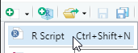
-
In the new R script, write the following:

-
Select all the lines and press
ControlorCommand ⌘andEnteron your keyboard at the same time. Alternatively, press the 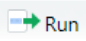 button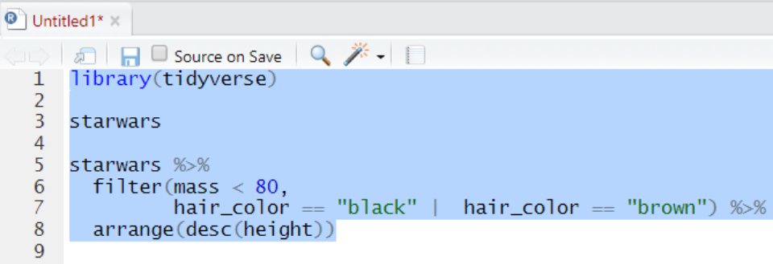
-
Check that you have the following in the console window (depending on your screen size you might have fewer columns):

Install the
arrowpackage, repeat step 2, above.Download the
PISA_2018_student_subset.parquetdataset from here and download it on your computer, make a note of the full folder location where you have saved this!
If you need help with finding the full folder location of your file, often a hurdle for Mac users, go to Section 2.8.3
- Copy the following code and replace
<folder>with the full folder location of where your dataset was saved, make sure that you have.parqueton the end. And keep the(r"[ ]")!
examples of what this should look like for PC and Mac
# For Pete (PC) the address format was:
PISA_2018 <- read_parquet(r"[C:\Users\Peter\KCL\MASTEMR\PISA_2018_student_subset.parquet]")
# For Richard (Mac) the address format was:
PISA_2018 <- read_parquet(r"[/Users/k1765032/Documents/Teaching/STEM MA/Quantitative module/Data sets/PISA_2018_student_subset.parquet]")- Underneath the code you have already written, copy the code below (you don’t have to write it yourself), and run it. Try and figure out what each line does and what it’s telling you.
library(tidyverse)
PISA_2018 %>%
mutate(maths_better = PV1MATH > PV1READ) %>%
select(CNT, ST004D01T, maths_better, PV1MATH, PV1READ) %>%
filter(!is.na(ST004D01T), !is.na(maths_better)) %>%
group_by(ST004D01T) %>%
mutate(students_n = n()) %>%
group_by(ST004D01T, maths_better) %>%
summarise(n = n(),
per = n/unique(students_n))That’s it, you should be set up!
Any issues, please drop a message on the Teams group, or mail peter.kemp@kcl.ac.uk and richard.brock@kcl.ac.uk
2.3 Starting to code
After adding a new R Script using the button , there are four parts to R Studio’s interface. For the moment we are most interested in the Script file section, top left.
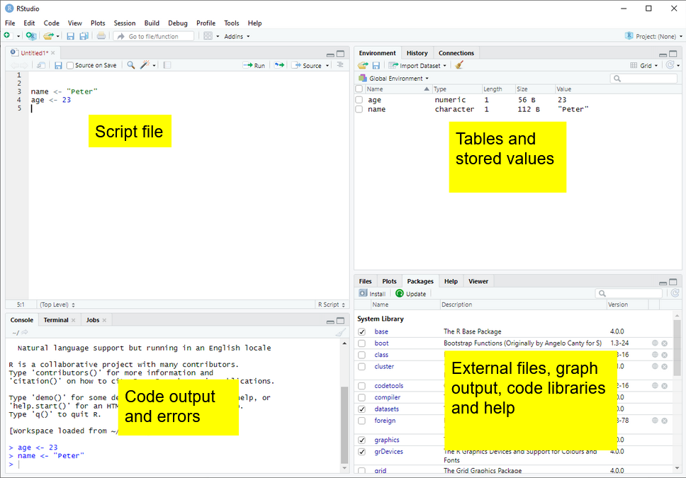
2.4 Your first program
2.4.1 Objects and instructions
In programming languages we can attach data to a name, this is called assigning a value to an object (you might also call them variables). To do this in R we use the <- arrow command. For example, I want to put the word "Pete" into an object called myname (note that words and sentences such as "Pete" need speech marks):
We can also perform quick calculations and assign them to objects:
Type the two examples above into your RStudio script file and check that they work. Adapt them to say your full name and give the number of MinutesInADay
Remember to select code and press control or command and Enter to run it
Objects can form part of calculations, for example, the code below shows how we can use the number HoursInYear to (roughly!) calculate the number of HoursInWeek:
Notice from the above we can perform the main arithmetic commands using keyboard symbols: + (add); - (minus); * (multiply); / (divide); ^ (power)
Objects can change values when you run code. For example in the code below:
What’s going on here?
- line 1 sets
ato equal 2000 (note: don’t use commas in writing numbersa <- 2,000would bring up an error), - line 2 sets
bto equal 5, - line 4 overwrites the value of
awith the value stored inb, making objectanow equal to 5 - line six is now
5 * 5
2.4.1.1 Questions
what are the outputs of the following code snippets/what do they do? One of the examples might not output anything, why is that? Type the code into your script file to check your answers:
code example 1
code example 2
code example 3
2.4.2 Naming objects
Correctly naming objects is very important. You can give an object almost any name, but there are a few rules to follow:
- Name them something sensible
- R is case sensitive,
myNameis not equal to (!=)myname - Don’t use spaces in names
- Don’t start a name with a number
- Keep punctuation in object names to underscore (
_and full stop.) e.g.my_name,my.name. - Stick to a convention for all your objects, it’ll make your code easier to read, e.g.
-
myName,yourName,ourName(this is camelCase 2) -
my_name,your_name,our_name
-
The actual name of an object has no effect on what it does (other than invalid names breaking your program!). For example age <- "Barry" is perfectly valid to R, it’s just a real pain for a human to read.
2.4.2.1 Questions
Which of these are valid R object names:
my_Numbermy-NumbermyNumber!first nameFIRSTnamei3namesnames3
For more information on the R programming style guide, see this
2.5 Datatypes
We have already met two different datatypes, the character datatype for words and letters (e.g. "Peter") and the numeric datatype for numbers (e.g. 12). Datatypes tell R how to handle data in certain circumstances. Sometimes data will be of the wrong datatype and you will need to convert between datatypes.
weeks <- 4
days_in_week <- "7"
# we now attempt to multiply a number by a string
# but it doesn't work!
total_days <- weeks * days_in_week Error in weeks * days_in_week: non-numeric argument to binary operatorWhilst R will understand what to do when we multiply numbers with numbers, it gets very confused and raises an error when we try to perform an arithmetic operation using words and numbers.
To perform the calculation we will need to convert the days_in_week from a string to a number, using the as.numeric(<text>) command:
There is a logical datatype for boolean values of TRUE and FALSE. This will become a lot more useful later.
legs_snake <- TRUE # you can specify logical values directly
dogs_legs <- 4
legs_dog <- dogs_legs > 0 # or as part of a calculation
# Do dog's have legs?
print(legs_dog)[1] TRUEThere are actually three datatypes for numbers in R, numeric for most of your work, the rarer integer specifically for whole numbers and the even rarer complex for complex numbers. When you are looking at categorical data, factors are used on top of the underlying datatype to store the different values, for example you might have a field of character to store countries, factors would then list the different countries stored in this character field.
To change from one datatype to another we use the as.____ command: as.numeric(<text>), as.logical(<data>), as.character(<numeric>).
2.5.0.1 Questions
- Can you spot the error(s) in this code and fix them so it outputs: “July is month 7”?
- Can you spot the error(s) in this code and fix it?
- Can you spot the error(s) in this code and fix it?
If you want to find out the datatype of an object you can use the structure str command to give you more information about the object. In this instance chr means that month is of character datatype and num means it is of the numeric datatype.
2.5.1 Vectors
So far we have seen how R does simple calculations and prints out the results. Underlying all of this are vectors. Vectors are data structures that bring together one or data elements of the same datatype. E.g. we might have a numeric vector recording the grades of a class, or a character vector storing the gender of a set of students. To define a vector we use c(<item>, <item>, ...), where c stands for combine. Vectors are very important to R3, even declaring a single object, x <- 6, is creating a vector of size one. Larger vectors look like this:
You can quickly perform calculations across whole vectors:
[1] "f" "m" "m" "f" "m" "f" "m"[1] 6 5 5 2 8 6 9We can also perform calculations across vectors, in the example below we can find out which students got a better grade in Maths than in English.
# this compares each pair of values
# e.g. the first item in maths_grade (5) with
# the first item in english_grade (8)
# and so on
# This returns a logical vector of TRUE and FALSE
maths_grade > english_grade[1] FALSE FALSE TRUE FALSE TRUE FALSE FALSE# To work out how many students got a better grade
# in maths than in English we can apply sum()
# to the logical vector.
# We know that TRUE == 1, FALSE == 0,
# so sum() will count all the TRUEs
sum(maths_grade > english_grade)[1] 2# if you want to find out the average grade for
# each student in maths and english
# add both vectors together and divide by 2
(maths_grade + english_grade) / 2[1] 6.5 4.5 3.5 1.5 5.0 5.5 8.5# we can use square brackets to pick a value from a vector
# vectors start couting from 1, so students[1] would pick Jo
students[1][1] "Joe"# we can pass a numeric vector to a another vector to create a
# subset, in the example below we find the 3rd and 5th item
students[c(3,5)][1] "Mo" "Olu"# we can also use a vector of TRUE and FALSE to pick items
# TRUE will pick an item, FALSE will ignore it
# for each maths_grade > english_grade that is TRUE
# the name in that position in the student vector will be shown
students[maths_grade > english_grade][1] "Mo" "Olu"You should be careful when trying to compare vectors of different lengths. When combining vectors of different lengths, the shorter vector will match the length of the longer vector by wrapping its values around. For example if we try to combine a vector of the numbers 1 ot 10 with a two item logical vector TRUE FALSE, the logical vector will repeat 5 times: c(TRUE, FALSE, TRUE, FALSE, TRUE, FALSE, TRUE, FALSE, TRUE, FALSE). We can use this vector as a mask to return the odd numbers, TRUE means keep, FALSE means ignore:
nums <- c(1,2,3,4,5,6,7,8,9,10)
mask <- c(TRUE, FALSE)
# you can see the repeat of mask by pasting them together
paste(nums, mask) [1] "1 TRUE" "2 FALSE" "3 TRUE" "4 FALSE" "5 TRUE" "6 FALSE"
[7] "7 TRUE" "8 FALSE" "9 TRUE" "10 FALSE"[1] 1 3 5 7 9This might not seem very useful, but it comes in very handy when we want to perform a single calculation across a whole vector. For example, we want to find all the students who achieved grade 5 in English, the below code creates a vector of 5s the same size as english_grade:
# this can also be rewritten english_grade >= c(5)
# note, when we are doing a comparison, we need to use double ==
students[english_grade == 5][1] "Al"[1] "Al"When we are doing a comparison, we need to use double == equals sign. Using a single equals sign is the equivalent of an assignment = is the same as <-
There are several shortcuts that you can take when creating vectors. Instead of writing a whole sequence of numbers by hand, you can use the seq(<start>, <finish>, <step>) command. For example:
This allows for some pretty short ways of solving quite complex problems, for example if you wanted to know the sum of all the multiples of 3 and 5 below 1000, you could write it like this:
Another shortcut is writing T, F, or 1, 0 instead of the whole words TRUE, FALSE:
2.5.2 Questions
- Can you spot the four problems with this code:
answer
nums <- c(1,2,3,4,7,2,2)
#1 a vector is declared using c(), not v()
#2 3 should be numeric, so no need for speech marks
# (though technically R would do this conversion for you!)
sum(nums)
mean(nums)
# return a vector of all numbers greater than 2
nums[nums >= 2] #3 to pick items from another vector, use square brackets- Create a vector to store the number of glasses of water you have drunk for each day in the last 7 days. Work out:
- the average number of glasses for the week,
- the total number of glasses,
- the number of days where you drank less than 2 glasses (feel free to replace water with your own tipple: wine, coffee, tea, coke, etc.)
- Using the vectors below, create a program that will find out the average grade for females taking English:
2.5.3 Summary questions
Now you have covered the basics of R, it’s time for some questions to check your understanding. These questions will cover all the material you have read so far and don’t be worried if you need to go back and check something. Exemplar answers are provided, but don’t worry if your solution looks a little different, there are often multiple ways to achieve the same outcome.
- Describe three datatypes that you can use in your program?
- What are two reasons that you might use comments?
-
Which object names are valid?
my_nameyour nameour-nameTHYname
- Can you spot the four errors in this code:
- [Extension] Calculate the number of seconds since 1970.
2.6 Packages and libraries
R comes with some excellent statistical tools, but often you will need to supplement them with packages4 . Packages contain functionality that isn’t built into R by default, but you can choose to load or install them to meet the needs of your tasks. For example you have code packages to deal with SPSS data, and other packages to run machine learning algorithms. Nearly all R packages are free to use!
2.6.1 Installing and loading packages
To install a package you can use the package tab in the bottom right-hand panel of RStudio and follow the steps from Section 2.2.2. Alternatively you can install things by typing:
Note that the instruction is to install packages, you can pass a vector of package names to install multiple packages at the same time:
Once a package is installed it doesn’t mean that you can use it, yet. You will need to load the package. To do this you need to use the library(<package_name>) command, for example:
Some packages might use the same function names as other packages, for example select might do different things depending on which package you loaded last. As a rule of thumb, when you start RStudio afresh, make sure that you load the tidyverse package after you have loaded all your other packages. To read more about this problem see Section 6.1
2.7 The tidyverse
This course focuses on using the tidyverse; a free collection of programming packages that will allow you to write code that imports data, tidys it, transforms it into useful datasets, visualises findings, creates statistical models and communicates findings to others data using a standardised set of commands.

For many people the tidyverse is the main reason that they use R. The tidyverse is used widely in government, academia, NGOs and industry, notable examples include the Financial Times and the BBC. Code in the tidyverse can be (relatively) easily understood by others and you, when you come back to a project after several months.
# load the tidyverse packages
library(tidyverse)
# download Covid data from website
deaths <- read.csv("https://raw.githubusercontent.com/owid/covid-19-data/master/public/data/excess_mortality/excess_mortality.csv")
deaths <- deaths %>%
filter(location %in%
c("United States", "United Kingdom",
"Sweden", "Germany")) %>%
mutate(date = as.Date(date))
ggplot(data=deaths) +
geom_line(aes(x = date,
y = excess_per_million_proj_all_ages,
colour=location)) +
theme(legend.position="bottom")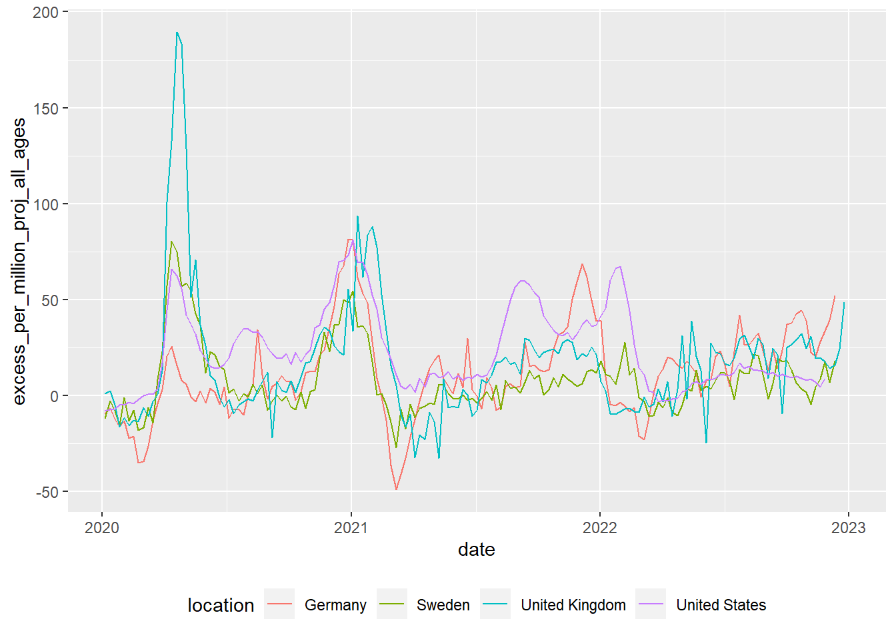
Try this out
The code above transforms data and converts it into a graph. It doesn’t have any comments, but you should hopefully be able to understand what a lot of the code does by just reading it. Can you guess what each line does? Try running the code by selecting parts of it and pressing control | command ⌘ and Enter
2.8 Loading data
We can’t do much with R without loading data from elsewhere. Data will come in many formats and R should be able to deal with all of them. Some of the datasets you access will be a few rows and columns; others, like the ones we are going to use on this course, might run into hundreds of thousands or even millions of rows and hundreds or thousands of columns. Depending on the format you are using, you might need to use specific packages. A few of the data file types you might meet are described below:
| File type | Description |
|---|---|
| Comma separated values [.csv] | As it says in the name, .csv files store data by separating data items with commas. They are a common way of transferring data and can be easily created and read by Excel, Google spreadsheets and text editors (in addition to R). CSVs aren’t compressed so will generally be larger than other file types. They don’t store information on the types of data stored in the file so you might find yourself having to specify that a date column is a date, rather than a string of text. You can read and write csv files without the need to load any packages, but if you do use readr you might find things go much faster. |
| Excel [.xls | .xlsx | .xlsxm] | Excel files store data in a compressed custom format. This means files will generally be smaller than CSVs and will also contain information on the types of data stored in different columns. R can read and write these files using the openxlsx package, but you can also use the tidyverse’s readxl for reading, and writexl for writing for excel formats. |
| R Data [.rds] | R has it’s own data format, .rds. Saving to this format means that you will make perfect copies of your R data, including data types and factors. When you load .rds files they will look exactly the same as when you saved them. Data can be highly compressed and it’s one of the fastest formats for getting data into R. You can read and write .rds files without the need to load any packages, but using the functions in readr might speed things up a bit. You won’t be able to look at .rds files in other programs such as Excel |
| Arrow [.parquet] | Apache Arrow .parquet is a relatively new format that allows for the transfer of files between different systems. Files are small and incredibly fast to load, whilst looking exactly the same as when you save them. The PISA dataset used here, that takes ~20 seconds to load in .rds format, will load in less than 2 seconds in .parquet format. Because of the way that data is stored you won’t be able to open these files in programs such as Excel. You will need the arrow package to read and write .parquet files. |
| SPSS [.sav] | SPSS is a common analysis tool in the world of social science. The native format for SPSS data is .sav. These files are compressed and include information on column labels and column datatypes. You will need either the haven or foreign packages to read data into R. Once you have loaded the .sav you will probably want to convert the data into a format that is more suitable for R, normally this will involve converting columns into factors. We cover factors in more detail below. |
| Stata [.dta] |
haven or foreign packages to read data into R |
| SAS [.sas] |
haven or foreign packages to read data into R |
| Structured Query Language [.sql] | a common format for data stored in large databases. Normally SQL code would be used to query these, you can use the tidyverse to help construct SQL this through the package dbplyr which will convert your tidyverse pipe code into SQL. R can be set up to communicate directly with databases using the DBI package. |
| JSON |
.json is a popular format for sharing data on the web. You can use jsonlite and rjson to access this type of data |
For this course we will be looking at .csv, excel, .rds and parquet files.
2.8.1 Dataframes
Loading datasets into R will normally store them as dataframes (also known as tibbles when using the tidyverse). Dataframes are the equivalent of tables in a spreadsheet, with rows, columns and datatypes.
The table above has 4 columns, each column has a datatype, CNT is a character vector, PV1MATH is a double (numeric) vector, ESCS is a double (numeric) vector and ST211Q01HA is a factor. For more about datatypes, see Section 2.5
Core to the tidyverse is the idea of tidy data, a rule of thumb for creating datasets that can be easily manipulated, modeled and presented. Tidy data are datasets where each variable is a column and each observation a row.
This data isn’t tidy data as each row has contains multiple exam results (observations):
| ID | Exam 1 | Grade 1 | Exam 2 | Grade 2 |
|---|---|---|---|---|
| R2341 | English | 4 | Maths | 5 |
| R8842 | English | 5 |
This dataframe is tidy data as each student has one entry for each exam:
| ID | Exam | Grade |
|---|---|---|
| R2341 | English | 4 |
| R2341 | Maths | 5 |
| R8842 | English | 5 |
First we need to get some data into R so we can start analysing them. We can load large datatables into R by either providing the online web address, or by loading it from a local file directory on your hard drive. Both methods are covered below:
2.8.2 Loading data from the web
To download files from the web you’ll need to find the exact location of the file you are using. For example below we will need another package, openxlsx, which you need to install before you load it (see: Section 2.2.2, or use line 1 below). The code shown will download the files from an online Google drive directly into objects in R using read.xlsx(<file_web_address>, <sheet_name>):
To convert data on your google drive into a link that works in R, you can use the following website: https://sites.google.com/site/gdocs2direct/. Note that not all read/load commands in R will work with web addresses and some will require you have to copies of the datasets on your disk drive. Additionally, downloading large datasets from the web directly into R can be very slow, loading the dataset from your harddrive will nearly always be much faster.
2.8.3 Loading data from your computer
Downloading files directly from web addresses can be slow and you might want to prefer to use files saved to your computer’s hard drive. You can do this by following the steps below:
Download the PISA_2018_student_subset.parquet file from here and save it to your computer where your R code file is.
Copy the location of the file (see next step for help)
-
To find the location of a file in Windows do the following:
-
Navigate to the location of the file in Windows Explorer:

-
Click on the address bar

Copy the location
-
-
To find the location of a file in Mac OSX do the following:
Open Finder
Navigate to the folder where you saved the file
-
Right click on the name of the file, then press the option
⌥(orAlt) button and selectCopy <name of file> as Pathname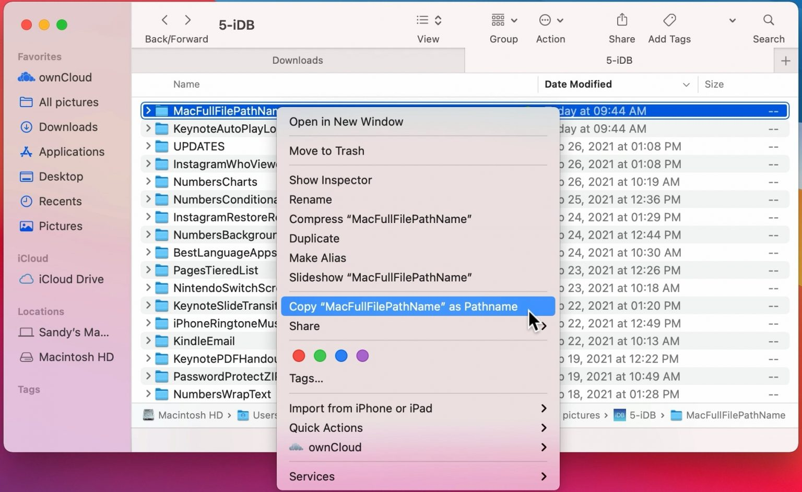
Alternatively, follow this
To load this particular data into R we need to use the read_parquet command from the arrow package, specifying the location and name of the file we are loading. See the following code:
2.8.4 Setting working directories
Using the setwd(<location>) you can specify where R will look by default for any datasets. In the example below, the dfe_data.xlsx will have been downloaded and stored in C:/Users/Peter/code. By running setwd("C:/Users/Peter/code") R will always look in that location when trying to load files, meaning that read_parquet(r"[C:/Users/Peter/code/PISA_2018_student_subset.parquet]") will be treated the same as read_parquet(r"[PISA_2018_student_subset.parquet]")
To work out what your current working directory is, you can use getwd().
2.8.5 Proper addresses
You might have found that you get an error if you don’t convert your backslashes \ into forwardslashes /. It’s common mistake and very annoying. In most programming languages a backslash signifies the start of a special command, for example \n signifies a newline.
With R there are three ways to get around the problem of backslashes in file locations, for the location:"C:\myfolder\" we could:
- replace them with forwardslashes (as shown above):
"C:/myfolder/" - replace them with double backslashes (the special character specified by two backslashes is one backslash!):
"C:\\myfolder\\" - use the inbuilt R command to deal with filenames:
r"[C:\myfolder\]"
2.8.6 .parquet files
For the majority of this workbook you will be using a cutdown version of the PISA_2018 student table. This dataset is huge and we have loaded it into R, selected fields we think are useful, converted column types to work with R and saved in the .parquet format. .parquet files are quick to load and small in size. To load an .parquet file you can use the read_parquet(<location>) command from the arrow package.
If you want to save out any of your findings, you can use write_parquet(<object>, <location>), where object is the table you are working on and location is where you want to save it.
2.8.7 .csv files
A very common way of distributing data is through .csv files. These files can be easily compressed and opened in common office spreadsheet tools such as Excel. To load a .csv we can use read_csv("<file_location>")
You might want to save your own work as a .csv for use later or for manipulation in another tool e.g. Excel. To do this we can use write_csv(<your_data>, "<your_folder><name>.csv"). NOTE: don’t forget to add .csv to the end of your “
2.9 Exploring data
Now that we have loaded the PISA_2018 dataset we can start to explore it.
You can check that the tables have loaded correctly by typing the object name and ‘running’ the line (control|command ⌘ and Enter)
# A tibble: 612,004 × 205
CNT OECD ISCEDL ISCEDD ISCEDO PROGN WVARS…¹ COBN_F COBN_M COBN_S GRADE
* <fct> <fct> <fct> <fct> <fct> <fct> <dbl> <fct> <fct> <fct> <fct>
1 Albania No ISCED l… C Vocat… Alba… 3 Alban… Alban… Alban… 0
2 Albania No ISCED l… C Vocat… Alba… 3 Alban… Alban… Alban… 0
3 Albania No ISCED l… C Vocat… Alba… 3 Alban… Alban… Alban… 0
4 Albania No ISCED l… C Vocat… Alba… 3 Alban… Alban… Alban… 0
5 Albania No ISCED l… C Vocat… Alba… 3 Alban… Alban… Alban… 0
6 Albania No ISCED l… C Vocat… Alba… 3 Alban… Alban… Alban… 0
7 Albania No ISCED l… C Vocat… Alba… 3 Missi… Missi… Missi… 0
8 Albania No ISCED l… C Vocat… Alba… 3 Alban… Alban… Alban… 0
9 Albania No ISCED l… C Vocat… Alba… 3 Alban… Alban… Alban… 0
10 Albania No ISCED l… C Vocat… Alba… 3 Missi… Missi… Missi… 0
# … with 611,994 more rows, 194 more variables: SUBNATIO <fct>, STRATUM <fct>,
# ESCS <dbl>, LANGN <fct>, LMINS <dbl>, OCOD1 <fct>, OCOD2 <fct>,
# REPEAT <fct>, CNTRYID <fct>, CNTSCHID <dbl>, CNTSTUID <dbl>, NatCen <fct>,
# ADMINMODE <fct>, LANGTEST_QQQ <fct>, LANGTEST_COG <fct>, BOOKID <fct>,
# ST001D01T <fct>, ST003D02T <fct>, ST003D03T <fct>, ST004D01T <fct>,
# ST005Q01TA <fct>, ST007Q01TA <fct>, ST011Q01TA <fct>, ST011Q02TA <fct>,
# ST011Q03TA <fct>, ST011Q04TA <fct>, ST011Q05TA <fct>, ST011Q06TA <fct>, …We can see from this that the tibble (another word for dataframe, basically a spreadsheet table) is 612004 rows, with 205 columns 5. This is data for all the students from around the world that took part in PISA 2018. The actual PISA dataset has many more columns than this, but for the examples here we have selected 205 of the more interesting data variables. The column names might seem rather confusing and you might want to refer to the PISA 2018 code book to find out what everything means.
The data shown in the console window is only the top few rows and first few columns. To see the whole table click on the Environment panel and the table icon to explore the table:
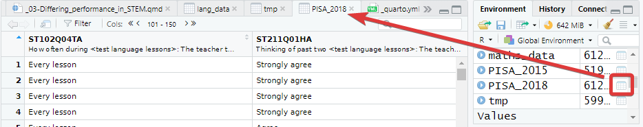
Alternatively, you can also hold down command ⌘|control and click on the table name in your R Script to view the table. You can also type View(<table_name>). Note: this has a capital “V”
In the table view mode you can read the label attached to each column, this will give you more detail about what the column stores. If you hover over columns it will display the label:
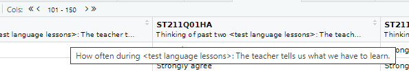
Alternatively, to read the full label of a column, the following code can be used:
[1] "How many books are there in your home?"Each view only shows you 50 columns, to see more use the navigation panel:
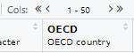
To learn more about loading data from in other formats, e.g. SPSS and STATA, look at the tidyverse documentation for haven.
The PISA_2018 dataframe is made up of multiple columns, with each column acting like a vector, which means each column stores values of only one datatype. If we look at the first four columns of the schools table, you can see the CNTSTUID, ESCS and PV1MATH columns are <dbl> (numeric) and the other three columns are of <fctr> (factor), a special datatype in R that helps store categorical and ordinal variables, see Section 2.11.2 for more information on how factors work.
# A tibble: 5 × 5
CNTSTUID ST004D01T CNT ESCS PV1MATH
<dbl> <fct> <fct> <dbl> <dbl>
1 800251 Male Albania 0.675 490.
2 800402 Male Albania -0.757 462.
3 801902 Female Albania -2.51 407.
4 803546 Male Albania -3.18 483.
5 804776 Male Albania -1.76 460.Vectors are data structures that bring together one or more data elements of the same datatype. E.g. we might have a numeric vector recording the grades of a class, or a character vector storing the gender of a set of students. To define a vector we use c(item, item, ...), where c stands for combine. Vectors are very important to R, even declaring a single object, x <- 6, is creating a vector of size one. To find out more about vectors see: Section 2.5.1
We can find out some general information about the table we have loaded. nrow and ncol tell you about the dimensions of the table
[1] 612004[1] 205If we want to know the names of the columns we can use the names() command that returns a vector. This can be a little confusing as it’ll return the names used in the dataframe, which can be hard to interpret, e.g. ST004D01T is PISA’s way of encoding gender. You might find the labels in the view of the table available through view(PISA_2018) and the Environment panel easier to navigate:
[1] "CNT" "OECD" "ISCEDL" "ISCEDD" "ISCEDO"
[6] "PROGN" "WVARSTRR" "COBN_F" "COBN_M" "COBN_S"
[11] "GRADE" "SUBNATIO" "STRATUM" "ESCS" "LANGN"
[16] "LMINS" "OCOD1" "OCOD2" "REPEAT" "CNTRYID"
[21] "CNTSCHID" "CNTSTUID" "NatCen" "ADMINMODE" "LANGTEST_QQQ"
[26] "LANGTEST_COG" "BOOKID" "ST001D01T" "ST003D02T" "ST003D03T"
[31] "ST004D01T" "ST005Q01TA" "ST007Q01TA" "ST011Q01TA" "ST011Q02TA"
[36] "ST011Q03TA" "ST011Q04TA" "ST011Q05TA" "ST011Q06TA" "ST011Q07TA"
[ reached getOption("max.print") -- omitted 165 entries ]As mentioned, the columns in the tables are very much like a collection of vectors, to access these columns we can put a $ [dollar sign] after the name of a table. This allows us to see all the columns that table has, using the up and down arrows to select, press the Tab key to complete:
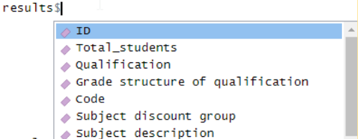
[1] Male Male Female Male Male Female Female Male Female Female
[11] Female Female Female Female Male Female Male Male Male Male
[21] Male Male Female Male Male Female Male Female Male Male
[31] Female Female Female Female Female Male Male Male Male Female
[ reached getOption("max.print") -- omitted 611964 entries ]
attr(,"label")
[1] Student (Standardized) Gender
Levels: Female Male Valid Skip Not Applicable Invalid No ResponseWe can apply functions to the returned column/vector, for example: sum, mean, median, max, min, sd, round, unique, summary, length. To find all the different/unique values contained in a column we can write:
[1] Albania United Arab Emirates Argentina
[4] Australia Austria Belgium
[7] Bulgaria Bosnia and Herzegovina Belarus
[10] Brazil Brunei Darussalam Canada
[13] Switzerland Chile Colombia
[16] Costa Rica Czech Republic Germany
[19] Denmark Dominican Republic Spain
[22] Estonia Finland France
[25] United Kingdom Georgia Greece
[28] Hong Kong Croatia Hungary
[31] Indonesia Ireland Iceland
[34] Israel Italy Jordan
[37] Japan Kazakhstan Korea
[40] Kosovo
[ reached getOption("max.print") -- omitted 40 entries ]
82 Levels: Albania United Arab Emirates Argentina Australia Austria ... VietnamWe can also combine commands, with length(<vector>) telling you how many items are in the unique(PISA_2018$CNT) command
You might meet errors when you try and run some of the commands because a field has missing data, recorded as NA. In the case below it doesn’t know what to do with the NA values in PV1MATH, so it gives up and returns NA:
You can see the NAs by just loking at this column:
[1] 0.6747 -0.7566 -2.5112 -3.1843 -1.7557 -1.4855 NA -3.2481 -1.7174
[10] NA -1.5617 -1.9952 -1.6790 -1.1337 NA NA -1.0919 -1.2391
[19] -0.1641 -0.4510 -0.9622 -0.8303 -1.8772 -1.2963 -1.4784 -2.3759 -0.8440
[28] -1.2251 NA -2.4655 -1.2018 -0.4426 -1.4634 -2.1813 -1.9087 -1.7194
[37] -2.7486 -2.0457 -1.8321 -1.8647
[ reached getOption("max.print") -- omitted 611964 entries ]
attr(,"label")
[1] "Index of economic, social and cultural status"To get around this you can tell R to remove/ignore the NA values when performing maths calculations:
R’s inbuilt mode function doesn’t calculate the mathematical mode, instead it tells you what type of data you are dealing with. You can work out the mode of data by using the modeest package:
There is more discussion on how to use modes in R here
Calculations might also be upset when you try to perform maths on a column that is stored as another datatype. For example if you wanted to work out the mean common number of minutes spent learning the language that the PISA test was sat in, e.g. number of hours of weekly English lessons in England:
Looking at the structure of this column, we can see it is stored as a factor, not as a numeric
num [1:612004] 90 180 90 90 400 150 NA NA 180 NA ...
- attr(*, "label")= chr "Learning time (minutes per week) - <test language>"So we need to change the type of the column to make it work with the mean command, changing it to as.numeric(<column>) for the calculation, for more details on datatypes, see Section 2.5.
# this isn't ideal for proper analysis as you will need to remove all the "No Response" data
mean(as.numeric(PISA_2018$LMINS), na.rm = TRUE)[1] 223.747To get a good overview of what a table contains, you can use the str(<table_name>) and summary(<table_name>) commands.
2.9.1 Questions
Using the PISA_2018 dataset:
- use the Environment window to view the dataset, what is the name and the label of the 100th column?
answer
# the 100th column is ST102Q02TA
# the label is: "How often during <test language lessons>: The teacher asks questions to check whether we have understood what was taught"
# you could use View() instead of the environment window, note the capital V
View(PISA_2018)
# use could use the vector subset to fetch the 100th name
names(PISA_2018)[100]
# you could use the attr function to find the label
attr(PISA_2018$ST102Q02TA, "label")
# or using the dollar sign to load this field will also give the label
PISA_2018$ST102Q02TA- Use the dollar sign
$to return the columnST004D01T. What is stored in this column?
[1] Male Male Female Male Male Female Female Male Female Female
[11] Female Female Female Female Male Female Male Male Male Male
[21] Male Male Female Male Male Female Male Female Male Male
[31] Female Female Female Female Female Male Male Male Male Female
[ reached getOption("max.print") -- omitted 611964 entries ]
attr(,"label")
[1] Student (Standardized) Gender
Levels: Female Male Valid Skip Not Applicable Invalid No Responseanswer
# [1] Male Male Female Male Male Female Female Male Female Female
# [11] Female Female Female Female Male Female Male Male Male Male
# [21] Male Male Female Male Male Female Male Female Male Male
# [31] Female Female Female Female Female Male Male Male Male Female
# [ reached getOption("max.print") -- omitted 611964 entries ]
# attr(,"label")
# [1] Student (Standardized) Gender
# Levels: Female Male Valid Skip Not Applicable Invalid No Response- How many students results are in the whole table?
- What
uniquevalues does the dataset hold for Mother’s occupationOCOD1and Father’s occupationOCOD2? Which is larger?
- What are the
maximum,mean,medianandminumum science gradesPV1SCIEachieved by any student
- Explore the dataset and makes notes about the range of values of 2 other columns
2.10 Piping and dplyr
Piping allows us to break down complex tasks into manageable chunks that can be written and tested one after another. There are several powerful commands in the tidyverse as part of the dplyr package that can help us group, filter, select, mutate and summarise datasets. With this small set of commands we can use piping to convert massive datasets into simple and useful results.
Using the pipe %>% command, we can feed the results from one command into the next command making for reusable and easy to read code.
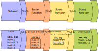
The pipe command we are using %>% is from the magrittr package which is installed alongside the tidyverse. Recently R introduced another pipe |> which offers very similar functionality and tutorials online might use either. The examples below use the %>% pipe.
Let’s look at an example of using the pipe on the PISA_2018 table to calculate the best performing OECD countries for maths PV1MATH by gender ST004D01T:
PISA_2018 %>%
filter(OECD == "Yes") %>%
group_by(CNT, ST004D01T) %>%
summarise(mean_maths = mean(PV1MATH, na.rm=TRUE),
sd_maths = sd(PV1MATH, na.rm=TRUE),
students = n()) %>%
filter(!is.na(ST004D01T)) %>%
arrange(desc(mean_maths))# A tibble: 74 × 5
# Groups: CNT [37]
CNT ST004D01T mean_maths sd_maths students
<fct> <fct> <dbl> <dbl> <int>
1 Japan Male 533. 90.5 2989
2 Korea Male 530. 102. 3459
3 Estonia Male 528. 85.0 2665
4 Japan Female 523. 82.2 3120
5 Korea Female 523. 96.0 3191
6 Switzerland Male 520. 92.7 3033
7 Estonia Female 519. 76.0 2651
8 Czech Republic Male 518. 98.0 3501
9 Belgium Male 518. 95.9 4204
10 Poland Male 517. 91.8 2768
# … with 64 more rows- line 1 passes the whole
PISA_2018dataset and pipes it into the next line%>% - line 2
filtersout any results that are from non-OECD countries by finding all the rows whereOECDequals==“Yes”, this is then piped to the next line - line 3 groups the data by country
CNTand by student genderST004D01T, this is then piped to the next line - line 4-6 the
summarisecommand performs a calculation on the country and gender groupings returning three new columns, each command on a new line and separated by a comma: the mean value for mathsmean_maths, the standard deviationsd_mathsand a column telling us how many students were in each grouping using then()which returns the number of rows in a group. These new columns and the grouping columns are then piped to the next line - line 7 filters out any gender
ST004D01Tthat isNA. First is finds all the students that haveNAas their gender by usingis.na(ST004D01T), then is NOTs/flips the result using the exclamation mark!, giving those students who don’t have their gender set toNA. The filtered data is then piped to the next line - line 8, finally we
arrange/ sort the results indescending order by themean_mathscolumn. The default for arrange is ascending order, leave out thedesc( )for the numbers to be ordered in the opposite way.
Males get a slightly better maths score than Females for this PV1MATH score, other scores are available, please read Section 5.5.1 to find out more about the limitations of using this value.
we met the assignment command earlier <-. Within the tidyverse commands we use the equals sign instead =.
The commands we have just used come from a package within the tidyverse called dplyr, let’s take a look at what they do:
| command | purpose | example |
|---|---|---|
| select | reduce the dataframe to the fields that you specify | select(<field>, <field>, <field>) |
| filter | get rid of rows that don’t meet one or more criteria | filter(<field> <comparison>) |
| group | group fields together to perform calculations | group_by(<field>, <field>)) |
| mutate | add new fields or change values in current fields | mutate(<new_field> = <field> / 2) |
| summarise | create summary data optionally using a grouping command | summarise(<new_field> = max(<field>)) |
| arrange | order the results by one or more fields | arrange(desc(<field>)) |
If you want to explore more of the functions of dplyr, take a look at the helpsheet
Adjust the code above to find out the lowest performing countries for reading PV1READ by gender that are not in the OECD
2.10.1 select
The PISA_2018 dataset has far too many fields, to reduce the number of fields to focus on just a few of them we can use select
# A tibble: 612,004 × 4
CNT ESCS ST004D01T ST003D02T
<fct> <dbl> <fct> <fct>
1 Albania 0.675 Male February
2 Albania -0.757 Male July
3 Albania -2.51 Female April
4 Albania -3.18 Male April
5 Albania -1.76 Male March
6 Albania -1.49 Female February
7 Albania NA Female July
8 Albania -3.25 Male August
9 Albania -1.72 Female March
10 Albania NA Female July
# … with 611,994 more rowsYou might also be in the situation where you want to select everything but one or two fields, you can do this with the negative signal -:
# A tibble: 612,004 × 203
ISCEDL ISCEDD ISCEDO PROGN WVARS…¹ COBN_F COBN_M COBN_S GRADE SUBNA…² STRATUM
<fct> <fct> <fct> <fct> <dbl> <fct> <fct> <fct> <fct> <fct> <fct>
1 ISCED… C Vocat… Alba… 3 Alban… Alban… Alban… 0 Albania ALB - …
2 ISCED… C Vocat… Alba… 3 Alban… Alban… Alban… 0 Albania ALB - …
3 ISCED… C Vocat… Alba… 3 Alban… Alban… Alban… 0 Albania ALB - …
4 ISCED… C Vocat… Alba… 3 Alban… Alban… Alban… 0 Albania ALB - …
5 ISCED… C Vocat… Alba… 3 Alban… Alban… Alban… 0 Albania ALB - …
6 ISCED… C Vocat… Alba… 3 Alban… Alban… Alban… 0 Albania ALB - …
7 ISCED… C Vocat… Alba… 3 Missi… Missi… Missi… 0 Albania ALB - …
8 ISCED… C Vocat… Alba… 3 Alban… Alban… Alban… 0 Albania ALB - …
9 ISCED… C Vocat… Alba… 3 Alban… Alban… Alban… 0 Albania ALB - …
10 ISCED… C Vocat… Alba… 3 Missi… Missi… Missi… 0 Albania ALB - …
# … with 611,994 more rows, 192 more variables: ESCS <dbl>, LANGN <fct>,
# LMINS <dbl>, OCOD1 <fct>, OCOD2 <fct>, REPEAT <fct>, CNTRYID <fct>,
# CNTSCHID <dbl>, CNTSTUID <dbl>, NatCen <fct>, ADMINMODE <fct>,
# LANGTEST_QQQ <fct>, LANGTEST_COG <fct>, BOOKID <fct>, ST001D01T <fct>,
# ST003D02T <fct>, ST003D03T <fct>, ST004D01T <fct>, ST005Q01TA <fct>,
# ST007Q01TA <fct>, ST011Q01TA <fct>, ST011Q02TA <fct>, ST011Q03TA <fct>,
# ST011Q04TA <fct>, ST011Q05TA <fct>, ST011Q06TA <fct>, ST011Q07TA <fct>, …You might find that you have a vector of column names that you want to select, to do this, we can use the any_of command:
# A tibble: 612,004 × 3
CNTSTUID CNTSCHID ST004D01T
<dbl> <dbl> <fct>
1 800251 800002 Male
2 800402 800002 Male
3 801902 800002 Female
4 803546 800002 Male
5 804776 800002 Male
6 804825 800002 Female
7 804983 800002 Female
8 805287 800002 Male
9 805601 800002 Female
10 806295 800002 Female
# … with 611,994 more rowsWith hundreds of fields, you might want to focus on fields whose names match a certain pattern, to do this you can use starts_with, ends_with, contains:
# A tibble: 612,004 × 19
ST011Q16NA ST012Q05NA ST012…¹ ST012…² ST125…³ ST060…⁴ ST061…⁵ IC009…⁶ IC009…⁷
<fct> <fct> <fct> <fct> <fct> <dbl> <fct> <fct> <fct>
1 Yes <NA> One One 6 year… 31 45 Yes, a… No
2 Yes Three or … One None 4 years 37 45 No Yes, b…
3 No One None None 4 years NA 45 Yes, a… Yes, a…
4 No <NA> None One 1 year… 31 45 Yes, a… No
5 No One One None 3 years 80 100 Yes, a… Yes, a…
6 No Three or … One None 6 year… 24 25 Yes, a… Yes, a…
7 <NA> <NA> <NA> <NA> <NA> NA <NA> <NA> <NA>
8 No None None None 1 year… NA 45 <NA> <NA>
9 Yes Three or … One One 4 years 36 45 Yes, a… Yes, a…
10 <NA> <NA> <NA> <NA> <NA> NA <NA> <NA> <NA>
# … with 611,994 more rows, 10 more variables: IC009Q07NA <fct>,
# IC009Q10NA <fct>, IC009Q11NA <fct>, IC008Q07NA <fct>, IC008Q13NA <fct>,
# IC010Q02NA <fct>, IC010Q05NA <fct>, IC010Q06NA <fct>, IC010Q09NA <fct>,
# IC010Q10NA <fct>, and abbreviated variable names ¹ST012Q06NA, ²ST012Q09NA,
# ³ST125Q01NA, ⁴ST060Q01NA, ⁵ST061Q01NA, ⁶IC009Q05NA, ⁷IC009Q06NAWhen you come to building your statistical models you will want to work with numeric data, you can find the columns that have only numbers in them by the following. Be warned though, sometimes there are numeric fields which have a few words in them, so R treats them as characters. Use the PISA codebook to help work out where those numbers are!
[1] "WVARSTRR" "ESCS" "LMINS" "CNTSCHID" "CNTSTUID"
[6] "ST060Q01NA" "MMINS" "SMINS" "TMINS" "CULTPOSS"
[11] "WEALTH" "PV1MATH" "PV1READ" "PV1SCIE" "ATTLNACT"
[16] "BELONG" "DISCLIMA" 2.10.1.1 Questions
- Spot the three errors with the following
selectstatement
- Write a
selectstatement to display the monthST003D02Tand year of birthST003D03Tand the genderST004D01Tof each student.
- Write a
selectstatement to show all the fields that are to do with digital skills, e.g.IC150Q01HA
- [EXTENSION] Adjust the answer to Q3 so that you select the gender
ST004D01Tand the IDCNTSTUIDof each student in addition to theIC15____fields
2.10.2 filter
Not only does the PISA_2018 dataset have a huge number of columns, it has hundred of thousands of rows. We want to filter this down to the students that we are interested in, i.e. filter out data that isn’t useful for our analysis. If we only wanted the results that were Male, we could do the following:
# A tibble: 307,044 × 5
CNT ESCS ST004D01T ST003D02T PV1MATH
<fct> <dbl> <fct> <fct> <dbl>
1 Albania 0.675 Male February 490.
2 Albania -0.757 Male July 462.
3 Albania -3.18 Male April 483.
4 Albania -1.76 Male March 460.
5 Albania -3.25 Male August 441.
6 Albania NA Male March 280.
7 Albania -1.09 Male March 523.
8 Albania -1.24 Male June 314.
9 Albania -0.164 Male August 428.
10 Albania -0.451 Male December 369.
# … with 307,034 more rowsWe can combine filter commands to look for Males born in September and where the PV1MATH figure is greater than 750. We can list multiple criteria in the filter by separating the criteria with commas, using commas mean that all of these criteria need to be TRUE for a row to be returned. A comma in a filter is the equivalent of an AND, :
PISA_2018 %>%
select(CNT,ESCS, ST004D01T, ST003D02T, PV1MATH) %>%
filter(ST004D01T == "Male",
ST003D02T == "September",
PV1MATH > 750)# A tibble: 56 × 5
CNT ESCS ST004D01T ST003D02T PV1MATH
<fct> <dbl> <fct> <fct> <dbl>
1 United Arab Emirates 0.861 Male September 760.
2 Belgium 0.887 Male September 751.
3 Bulgaria -0.160 Male September 752.
4 Canada 1.38 Male September 751.
5 Canada 1.16 Male September 760.
6 Canada 0.760 Male September 770.
7 Switzerland 0.814 Male September 783.
8 Germany 0.740 Male September 762.
9 Spain 1.46 Male September 787.
10 Estonia 0.897 Male September 752.
# … with 46 more rowsYou can also write it as an ampersand &
Remember to include the == sign when looking to filter on equality; additionally, you can use != (not equals), >=, <=, >, <.
Remember matching is case sensitive, “june” != “June”
Rather than just looking at September born students, we want to find all the students born in the Autumn term. But if we add a couple more criteria on ST003D02T nothing is returned!
PISA_2018 %>%
select(CNT,ESCS, ST004D01T, ST003D02T, PV1MATH) %>%
filter(ST004D01T == "Male",
ST003D02T == "September",
ST003D02T == "October",
ST003D02T == "November",
ST003D02T == "December",
PV1MATH > 750)# A tibble: 0 × 5
# … with 5 variables: CNT <fct>, ESCS <dbl>, ST004D01T <fct>, ST003D02T <fct>,
# PV1MATH <dbl>The reason is R is looking for inidividual students born in September AND October AND November AND December. As a student can only have one birth month there are no students that meet this criteria. We need to use OR :
To create an OR in a filter we use the bar | character, the below looks for all students who are “Male” AND were born in “September” OR “October” OR “November” OR “December”, AND have a PV1MATH > 750.
PISA_2018 %>%
select(CNT,ESCS, ST004D01T, ST003D02T, PV1MATH) %>%
filter(ST004D01T == "Male",
(ST003D02T == "September" | ST003D02T == "October" | ST003D02T == "November" | ST003D02T == "December"),
PV1MATH > 750)# A tibble: 175 × 5
CNT ESCS ST004D01T ST003D02T PV1MATH
<fct> <dbl> <fct> <fct> <dbl>
1 Albania 0.539 Male October 789.
2 United Arab Emirates 0.861 Male September 760.
3 United Arab Emirates 0.813 Male October 753.
4 United Arab Emirates 0.953 Male November 766.
5 United Arab Emirates 0.930 Male November 773.
6 United Arab Emirates 1.44 Male October 752.
7 Australia 1.73 Male December 756.
8 Australia -0.0537 Male October 827.
9 Australia 1.18 Male November 758.
10 Australia 1.13 Male October 757.
# … with 165 more rowsIt’s neater, maybe, to use the %in% command, which checks to see if the value in a column is present in a vector, this can mimic the OR/| command:
When building filters you need to know the range of values that a column can take, we can do this in several ways:
[1] "0-10 books" "11-25 books" "26-100 books"
[4] "101-200 books" "201-500 books" "More than 500 books"
[7] "Valid Skip" "Not Applicable" "Invalid"
[10] "No Response" [1] 0-10 books 11-25 books <NA>
[4] 26-100 books 101-200 books More than 500 books
[7] 201-500 books
10 Levels: 0-10 books 11-25 books 26-100 books 101-200 books ... No Response[1] "How many books are there in your home?"2.10.2.1 Questions
- Spot the three errors with the following
selectstatement
- Use
filterto find all the students withThree or morecars in their homeST012Q02TA. How does this compare to those with noNonecars?
- Adjust your code in Q2. to find the number of students with
Three or morecars in their homeST012Q02TAinItaly, how does this compare withSpain?
- Write a
filterto create a table for the number ofFemalestudents with readingPV1READscores lower than 400 in theUnited Kingdom, store the result asread_low_female, repeat but forMalestudents and store asread_low_male. Usenrow()to work out if there are more males or females with a low reading score in the UK
answer
read_low_female <- PISA_2018 %>%
filter(CNT == "United Kingdom",
PV1READ < 400,
ST004D01T == "Female")
read_low_male <- PISA_2018 %>%
filter(CNT == "United Kingdom",
PV1READ < 400,
ST004D01T == "Male")
nrow(read_low_female)
nrow(read_low_male)
# You could also pipe the whole dataframe into nrow()
PISA_2018 %>%
filter(CNT == "United Kingdom",
PV1READ < 400,
ST004D01T == "Female") %>%
nrow()- How many students in the United Kingdom had no television
ST012Q01TAOR no connection to the internetST011Q06TA. HINT: uselevels(PISA_2018$ST012Q01TA)to look at the levels available for each column.
- Which countr[y|ies] had students with
NAfor Gender?
2.10.3 renaming columns
Very often when dealing with datasets such as PISA or TIMSS, the column names can be very confusing without a reference key, e.g. ST004D01T, BCBG10B and BCBG11. To rename columns in the tidyverse we use the rename(<new_name> = <old_name>) command. For example, if you wanted to rename the rather confusing student column for gender, also known as ST004D01T, and the column for having a dictionary at home, also known as ST011Q12TA, you could use:
PISA_2018 %>%
rename(gender = ST004D01T,
dictionary = ST011Q12TA) %>%
select(CNT, gender, dictionary) %>%
summary() CNT gender dictionary
Spain : 35943 Female :304958 Yes :524311
Canada : 22653 Male :307044 No : 66730
Kazakhstan : 19507 Valid Skip : 0 Valid Skip : 0
United Arab Emirates: 19277 Not Applicable: 0 Not Applicable: 0
Australia : 14273 Invalid : 0 Invalid : 0
Qatar : 13828 No Response : 0 No Response : 0
(Other) :486523 NA's : 2 NA's : 20963 If you want to change the name of the column so that it stays when you need to perform another calculation, remember to assign the renamed dataframe back to the original dataframe. But be warned, you’ll need to reload the full dataset to restore the original names:
2.10.4 group_by and summarise
So far we have looked at ways to return rows that meet certain criteria. Using group_by and summarise we can start to analyse data for different groups of students. For example, let’s look at the number of students who don’t have internet connections at home ST011Q06TA:
# A tibble: 3 × 2
ST011Q06TA student_n
<fct> <int>
1 Yes 543010
2 No 49703
3 <NA> 19291- Line 1 passes the full
PISA_2018to the pipe - Line 2 makes groups within
PISA_2018using the unique values ofST011Q06TA - Line 3, these groups are then passed to
summarise, which creates a new column calledstudent_nand stores the number of rows in eachST011Q06TAgroup using then()command.summariseonly returns the columns it creates, or are in thegroup_by, everything else is discarded.
What we might want to do is look at this data from a country by country perspective, by adding another field to the group_by() command, we then group by the unique combination of countries CNT and internet access ST011Q06TA, e.g. Albania+Yes; Albania+No; Albania+NA; Brazil+Yes; etc
int_by_cnt <- PISA_2018 %>%
group_by(CNT, ST011Q06TA) %>%
summarise(student_n = n())
print(int_by_cnt)# A tibble: 240 × 3
# Groups: CNT [80]
CNT ST011Q06TA student_n
<fct> <fct> <int>
1 Albania Yes 5059
2 Albania No 1084
3 Albania <NA> 216
4 United Arab Emirates Yes 17616
5 United Arab Emirates No 949
6 United Arab Emirates <NA> 712
7 Argentina Yes 9871
8 Argentina No 1781
9 Argentina <NA> 323
10 Australia Yes 12547
# … with 230 more rowssummarise can also be used to work out statistics by grouping. For example, if you wanted to find out the max, mean and min science grade PV1SCIE by country CNT, you could do the following:
PISA_2018 %>%
group_by(CNT) %>%
summarise(sci_max = max(PV1SCIE, na.rm = TRUE),
sci_mean = mean(PV1SCIE, na.rm = TRUE),
sci_min = min(PV1SCIE, na.rm = TRUE))# A tibble: 80 × 4
CNT sci_max sci_mean sci_min
<fct> <dbl> <dbl> <dbl>
1 Albania 674. 417. 166.
2 United Arab Emirates 778. 425. 86.3
3 Argentina 790. 418. 138.
4 Australia 879. 502. 153.
5 Austria 779. 493. 175.
6 Belgium 764. 502. 196.
7 Bulgaria 741. 426. 145.
8 Bosnia and Herzegovina 664. 398. 152.
9 Belarus 799. 474. 192.
10 Brazil 747. 407. 95.6
# … with 70 more rowsgroup_by() can have unintended consequences in your code if you are saving your pipes to new dataframes. To be safe your can clear any grouping by adding: my_data %>% ungroup()
2.10.4.1 Questions
- Spot the three errors with the following
summarisestatement
- Write a
group_byandsummarisestatement to work out themeanandmedianpoverty valueESCSfor each student by countryCNT
- Using
summarisework out,YesorNo, by countryCNTand genderST004D01T, whether students “reduce the energy I use at home […] to protect the environment.”ST222Q01HA. Filter out anyNAvalues onST222Q01HA:
2.10.5 mutate
Sometimes you will want to adjust the values stored in a field, e.g. converting a distance in miles into kilometres; or compute a new fields based on other fields, e.g. working out a total grade given the parts of a test. To do this we can use mutate. Unlike summarise, mutate retains all the other columns either adding a new column or changing an existing one
mutate(<field> = <field_calculation>)
The PISA_2018 dataset has results for maths PV1MATH, science PV1SCIE and reading PV1READ. We could combine these to create an overall PISA_grade, and PISA_mean:
PISA_2018 %>%
mutate(PV1_total = PV1MATH + PV1SCIE + PV1READ,
PV1_mean = PV1_total/3) %>%
select(CNT, ESCS, PV1_total, PV1_mean)# A tibble: 612,004 × 4
CNT ESCS PV1_total PV1_mean
<fct> <dbl> <dbl> <dbl>
1 Albania 0.675 1311. 437.
2 Albania -0.757 1319. 440.
3 Albania -2.51 1158. 386.
4 Albania -3.18 1424. 475.
5 Albania -1.76 1094. 365.
6 Albania -1.49 1004. 335.
7 Albania NA 1311. 437.
8 Albania -3.25 1104. 368.
9 Albania -1.72 1268. 423.
10 Albania NA 1213. 404.
# … with 611,994 more rows- line 2
mutatecreates a new field calledPV1_totalmade up by adding together the columns for maths, science and reading. Each column acts like a vector and adding them together is the equivalent of adding each students individual grades together, row by row. See Section 2.5.1 for more details on vector addition. - line 3 inside the same
mutatestatement, we take thePV1_totalcalculated on line 2 and divide it by 3, to give us a mean value, this is then assigned to a new column,PV1_mean. - line 4 this line
selects only the fields that we are interested in, dropping the others
We can use mutate to create subsets of data in fields. For example, if we wanted to see how many students in each country were high performing readers, specified by getting a reading grade of greater than 550, we could do the following:
PISA_2018 %>%
mutate(PV1READ_high = PV1READ > 550) %>%
group_by(CNT, PV1READ_high) %>%
summarise(n = n())# A tibble: 159 × 3
# Groups: CNT [80]
CNT PV1READ_high n
<fct> <lgl> <int>
1 Albania FALSE 6083
2 Albania TRUE 276
3 United Arab Emirates FALSE 16567
4 United Arab Emirates TRUE 2710
5 Argentina FALSE 11003
6 Argentina TRUE 972
7 Australia FALSE 9311
8 Australia TRUE 4962
9 Austria FALSE 4900
10 Austria TRUE 1902
# … with 149 more rowsComparisons can also be made between different columns, if we wanted to find out the percentage of Males and Females that got a better grade in their maths test PV1MATH than in their reading test PV1READ:
PISA_2018 %>%
mutate(maths_better = PV1MATH > PV1READ) %>%
select(CNT, ST004D01T, maths_better, PV1MATH, PV1READ) %>%
filter(!is.na(ST004D01T), !is.na(maths_better)) %>%
group_by(ST004D01T) %>%
mutate(students_n = n()) %>%
group_by(ST004D01T, maths_better) %>%
summarise(n = n(),
per = n/unique(students_n))# A tibble: 4 × 4
# Groups: ST004D01T [2]
ST004D01T maths_better n per
<fct> <lgl> <int> <dbl>
1 Female FALSE 176021 0.583
2 Female TRUE 126157 0.417
3 Male FALSE 110269 0.362
4 Male TRUE 194178 0.638- line 2
mutatecreates a new field calledmaths_bettermade up by comparing thePV1MATHgrade withPV1READand creating a boolean/logical vector for the column. - line 3
selects a subset of the columns - line 4
filters out any students that don’t have gender dataST004D01T, or where the calculation on line 2 failed, i.e.PV1MATHorPV1READwasNA - line 5
groupon the gender of the student - line 6 using the
groupon line 5, usemutateto calculate the total number of Males and Females by looking for the number of rows in each groupn(), store this asstudents_n - line 7 re-
groupthe data on genderST004D01Tand whether the student is better at maths than readingmaths_better - line 8 count the number of students,
nin each group, as specified by line 7. - line 9 create a percentage figure for the number of students in each grouping given by line 7. Use the
nvalue from line 8 and thestudents_nvalue from line 6. NOTE: we need to useunique(students_n)to return just one value for each grouping rather than a value for every row of the line 7 grouping
For more information on how to mutate fields using ifelse, see Section 2.11.1
2.10.6 arrange
The results returned by pipes can be huge, so it’s a good idea to store them in objects and explore them in the Environment window where you can sort and search within the output. There might also be times when you want to order/arrange the outputs in a particular way. We can do this quite easily in the tidyverse by using the arrange(<column_name>, <column_name>) function.
# A tibble: 612,004 × 3
CNT ST004D01T PV1MATH
<fct> <fct> <dbl>
1 Philippines Female 24.7
2 Jordan Male 51.0
3 Jordan Female 61.6
4 Mexico Female 64.3
5 Kazakhstan Male 70.4
6 Jordan Male 70.7
7 Bulgaria Male 73.4
8 Kosovo Male 76.0
9 North Macedonia Female 78.3
10 North Macedonia Male 81.2
# … with 611,994 more rowsIf we’re interested in the highest achieving students we can add the desc() function to arrange:
# A tibble: 612,004 × 4
CNT LANGN ST004D01T PV1MATH
<fct> <fct> <fct> <dbl>
1 Canada Another language (CAN) Male 888.
2 Canada Another language (CAN) Male 874.
3 United Arab Emirates English Male 865.
4 B-S-J-Z (China) Mandarin Female 864.
5 Australia English Male 863.
6 B-S-J-Z (China) Mandarin Male 861.
7 Serbia Serbian Male 860.
8 Singapore Invalid Female 849.
9 Australia Cantonese Male 845.
10 Canada French Female 842.
# … with 611,994 more rows2.10.7 Bring everyting together
We know that the evidence strongly indicates that repeating a year is not good for student progress, but how do countries around the world differ in terms of the percentage of their students who repeat a year?
data_repeat <- PISA_2018 %>%
filter(!is.na(REPEAT)) %>%
group_by(CNT) %>%
mutate(total = n()) %>%
select(CNT, REPEAT, total) %>%
group_by(CNT, REPEAT) %>%
summarise(student_n = n(),
total = unique(total),
per = student_n / unique(total)) %>%
filter(REPEAT == "Repeated a grade") %>%
arrange(desc(per))
print(data_repeat)
write_csv(data_repeat, "<folder_location>/repeat_a_year.csv")# A tibble: 77 × 5
# Groups: CNT [77]
CNT REPEAT student_n total per
<fct> <fct> <int> <int> <dbl>
1 Morocco Repeated a grade 3333 6666 0.5
2 Colombia Repeated a grade 2746 7185 0.382
3 Lebanon Repeated a grade 1580 4756 0.332
4 Uruguay Repeated a grade 1657 5049 0.328
5 Luxembourg Repeated a grade 1655 5168 0.320
6 Dominican Republic Repeated a grade 1694 5474 0.309
7 Brazil Repeated a grade 3227 10438 0.309
8 Macao Repeated a grade 1135 3773 0.301
9 Belgium Repeated a grade 2351 8089 0.291
10 Costa Rica Repeated a grade 1904 6571 0.290
# … with 67 more rows- Line 2,
filterout anyNAvalues in theREPEATfield - Line 3, group on the country of student
CNT - Line 4, create a new column
totalfor total number of rowsn()in each countryCNTgrouping - Line 5, select on the
CNT,REPEATandtotalcolumns - Line 6, regroup the data on country
CNTand whether a student has repeated a yearREPEAT, i.e. Albania+Did not repeat a grade; Albania+Repeated a grade; etc. - Line 7, using the above grouping, count the number of rows in each group
n()and assign this tostudent_n - Line 8, for each grouping keep the
totalnumber of students in each country, as calculated on line 4. Note:unique(total)is needed here to return a single value oftotal, rather than a value for each student in each country - Line 9, using
student_nfrom line 7 and the number of students per countrytotal, from line 4, create a percentageperfor each grouping - Line 10, as we have percentages for both
Repeated a gradeandDid not repeat a grade, we only need to display one of these. Note: that there is an extra space in this - Line 11, finally, we sort the data on the per/percentage column, to show the countries with the highest level of repeating a grade. This data is self-recorded by students, so might not be totally reliable!
- Line 15, save the data to your own folder as a csv
2.11 Advanced topics
2.11.1 Recoding data (ifelse)
Often we want to plot values in groupings that don’t yet exist, for example might want to give all schools over a certain size a different colour from others schools, or flag up students who have a different home language to the language that is being taught in school. To do this we need to look at how we can recode values. A common way to recode values is through an ifelse statement:
ifelse(<statement(s)>, <value_if_true>, <value_if_false>)
ifelse allows us to recode the data. In the example below, we are going to add a new column to the PISA_2018 dataset (using mutate) noting whether a student got a higher grade in their Maths PV1MATH or Reading PV1READ tests. if PV1MATH is bigger then PV1READ, the maths_better is TRUE, else maths_better is FALSE, or in dplyr format:
maths_data <- PISA_2018 %>%
mutate(maths_better =
ifelse(PV1MATH > PV1READ,
TRUE,
FALSE)) %>%
select(CNT, ST004D01T, maths_better, PV1MATH, PV1READ)
print(maths_data)# A tibble: 612,004 × 5
CNT ST004D01T maths_better PV1MATH PV1READ
<fct> <fct> <lgl> <dbl> <dbl>
1 Albania Male TRUE 490. 376.
2 Albania Male TRUE 462. 434.
3 Albania Female TRUE 407. 359.
4 Albania Male TRUE 483. 425.
5 Albania Male TRUE 460. 306.
6 Albania Female TRUE 367. 352.
7 Albania Female FALSE 411. 413.
8 Albania Male TRUE 441. 271.
9 Albania Female TRUE 506. 373.
10 Albania Female FALSE 412. 412.
# … with 611,994 more rowsWe now take this new dataset maths_data and look at whether the difference between relative performance in maths and reading is the same for girls and boys:
maths_data %>%
filter(!is.na(ST004D01T), !is.na(maths_better)) %>%
group_by(ST004D01T, maths_better) %>%
summarise(n = n()) # A tibble: 4 × 3
# Groups: ST004D01T [2]
ST004D01T maths_better n
<fct> <lgl> <int>
1 Female FALSE 176021
2 Female TRUE 126157
3 Male FALSE 110269
4 Male TRUE 194178Adjust the code above to work out the percentages of Males and Females ST004D01T in each group. Check to see if the pattern also exists between science PV1SCIE and reading PV1READ:
adding percentage column
PISA_2018 %>%
mutate(maths_better =
ifelse(PV1MATH > PV1READ,
TRUE,
FALSE)) %>%
select(CNT, ST004D01T, maths_better, PV1MATH, PV1READ) %>%
filter(!is.na(ST004D01T), !is.na(maths_better)) %>%
group_by(ST004D01T) %>%
mutate(students_n = n()) %>%
group_by(ST004D01T, maths_better) %>%
summarise(n = n(),
per = n/unique(students_n))comparing science and reading
PISA_2018 %>%
mutate(sci_better =
ifelse(PV1SCIE > PV1READ,
TRUE,
FALSE)) %>%
select(CNT, ST004D01T, sci_better, PV1SCIE, PV1READ) %>%
filter(!is.na(ST004D01T), !is.na(sci_better)) %>%
group_by(ST004D01T) %>%
mutate(students_n = n()) %>%
group_by(ST004D01T, sci_better) %>%
summarise(n = n(),
per = n/unique(students_n))comparing science and maths
PISA_2018 %>%
mutate(sci_better =
ifelse(PV1SCIE > PV1MATH,
TRUE,
FALSE)) %>%
select(CNT, ST004D01T, sci_better, PV1SCIE, PV1MATH) %>%
filter(!is.na(ST004D01T), !is.na(sci_better)) %>%
group_by(ST004D01T) %>%
mutate(students_n = n()) %>%
group_by(ST004D01T, sci_better) %>%
summarise(n = n(),
per = n/unique(students_n))ifelse statements can get a little complicated when using factors (see: Section 2.11.2). Take this example. Let’s flag students who have a different home language LANGN to the language that is being used in the PISA assessment tool LANGTEST_QQQ. We make an assumption here that the assessment tool will be the language used at school, so these students will be learning in a different language to their mother tongue. if LANGN equals LANGTEST_QQQ, the lang_diff is FALSE, else lang_diff is TRUE, this raises an error:
lang_data <- PISA_2018 %>%
mutate(lang_diff =
ifelse(LANGN == LANGTEST_QQQ,
FALSE,
TRUE)) %>%
select(CNT, lang_diff, LANGTEST_QQQ, LANGN)Error in `mutate()`:
! Problem while computing `lang_diff = ifelse(LANGN == LANGTEST_QQQ,
FALSE, TRUE)`.
Caused by error in `Ops.factor()`:
! level sets of factors are differentThe levels in each field are different, i.e. the range of home languages is larger than the range of test languages. To fix this, all we need to do is cast the factors LANGN and LANGTEST_QQQ as characters using as.character(<field>). This will then allow the comparison of the text stored in each row:
lang_data <- PISA_2018 %>%
mutate(lang_diff =
ifelse(as.character(LANGN) == as.character(LANGTEST_QQQ),
FALSE,
TRUE)) %>%
select(CNT, lang_diff, LANGTEST_QQQ, LANGN)
print(lang_data)# A tibble: 612,004 × 4
CNT lang_diff LANGTEST_QQQ LANGN
<fct> <lgl> <fct> <fct>
1 Albania TRUE Albanian Another language (ALB)
2 Albania FALSE Albanian Albanian
3 Albania FALSE Albanian Albanian
4 Albania FALSE Albanian Albanian
5 Albania FALSE Albanian Albanian
6 Albania FALSE Albanian Albanian
7 Albania NA <NA> Missing
8 Albania FALSE Albanian Albanian
9 Albania FALSE Albanian Albanian
10 Albania NA <NA> Missing
# … with 611,994 more rowsWe can now look at this dataset to get an idea of which countries have the largest percentage of students learning in a language other than their mother tongue:
lang_data_diff <- lang_data %>%
group_by(CNT) %>%
mutate(student_n = n()) %>%
group_by(CNT, lang_diff) %>%
summarise(n = n(),
percentage = 100*(n / max(student_n))) %>%
filter(!is.na(lang_diff),
lang_diff == TRUE)
print(lang_data_diff)# A tibble: 80 × 4
# Groups: CNT [80]
CNT lang_diff n percentage
<fct> <lgl> <int> <dbl>
1 Albania TRUE 284 4.47
2 United Arab Emirates TRUE 8195 42.5
3 Argentina TRUE 651 5.44
4 Australia TRUE 2238 15.7
5 Austria TRUE 1329 19.5
6 Belgium TRUE 2458 29.0
7 Bulgaria TRUE 747 14.1
8 Bosnia and Herzegovina TRUE 526 8.12
9 Belarus TRUE 248 4.27
10 Brazil TRUE 297 2.78
# … with 70 more rowsThis looks like a promising dataset, but there are some strange results:
# A tibble: 9 × 4
# Groups: CNT [9]
CNT lang_diff n percentage
<fct> <lgl> <int> <dbl>
1 Hong Kong TRUE 5880 97.4
2 Lebanon TRUE 5339 95.1
3 Macao TRUE 3683 97.6
4 Montenegro TRUE 6411 96.2
5 Norway TRUE 5813 100
6 Philippines TRUE 6823 94.3
7 B-S-J-Z (China) TRUE 12049 99.9
8 Singapore TRUE 6666 99.9
9 Ukraine TRUE 5597 93.3Exploring data for Ukraine, we can see that a different spelling has been used in each field, Ukrainian and Ukranain.
# A tibble: 5,998 × 4
CNT lang_diff LANGTEST_QQQ LANGN
<fct> <lgl> <fct> <fct>
1 Ukraine TRUE Ukranian Ukrainian
2 Ukraine TRUE Ukranian Ukrainian
3 Ukraine TRUE Ukranian Ukrainian
4 Ukraine TRUE Ukranian Russian
5 Ukraine TRUE Ukranian Ukrainian
6 Ukraine TRUE Ukranian Russian
7 Ukraine TRUE Ukranian Ukrainian
8 Ukraine TRUE Ukranian Ukrainian
9 Ukraine TRUE Ukranian Russian
10 Ukraine TRUE Ukranian Ukrainian
# … with 5,988 more rowsifelse can help here too. If we pick the spelling we want to stick to, we can recode fields to match:
lang_data %>%
mutate(LANGTEST_QQQ =
ifelse(as.character(LANGTEST_QQQ) == "Ukranian",
"Ukrainian",
as.character(LANGTEST_QQQ))) %>%
filter(CNT == "Ukraine")# A tibble: 5,998 × 4
CNT lang_diff LANGTEST_QQQ LANGN
<fct> <lgl> <chr> <fct>
1 Ukraine TRUE Ukrainian Ukrainian
2 Ukraine TRUE Ukrainian Ukrainian
3 Ukraine TRUE Ukrainian Ukrainian
4 Ukraine TRUE Ukrainian Russian
5 Ukraine TRUE Ukrainian Ukrainian
6 Ukraine TRUE Ukrainian Russian
7 Ukraine TRUE Ukrainian Ukrainian
8 Ukraine TRUE Ukrainian Ukrainian
9 Ukraine TRUE Ukrainian Russian
10 Ukraine TRUE Ukrainian Ukrainian
# … with 5,988 more rowsUnfortunately, if you explore this dataset a little further, the language fields are don’t conform well with each other and a lot more work with ifelse will be needed before you could put together any full analysis around students who speak different langages at home and at school.
It’s possible to nest our ifelse statements, by writing another ifelse where you would have the <value_if_false>, for example we might want to give describe the type of school in England:
2.11.2 Factors and statistical data types
The types of variable will heavily influence what statistical analysis you can perform. R is there to help by assigning datatypes to each field. We have different sorts of data that can be stored:
-
Categorical - data that can be divided into groups or categories
- Nominal - categorical data where the order isn’t important, e.g. gender, or colours
- Ordinal - categorical data that may have order or ranking, e.g. exam grades (A, B, C, D) or lickert scales (strongly agree, agree, disgaree, strongly disagree)
-
Numeric - data that consists of numbers
- Continuous - numeric data that can take any value within a given range, e.g. height (178cm, 134.54cm)
- Discrete - numeric data that can take only certain values within a range, e.g. number of children in a family (0,1,2,3,4,5)
But here we are going to look at how R handles factors. Factors have two parts, levels and codes. levels are what you see when you view a table column, codes are an underlying order to the data. Factors allow you to store data that has a known set of values taht you might want to display in an order other than alphabetical. For example, if we look at the month field ST003D02T using the levels(<field>) command:
[1] "January" "February" "March" "April"
[5] "May" "June" "July" "August"
[9] "September" "October" "November" "December"
[13] "Valid Skip" "Not Applicable" "Invalid" "No Response" We can see that the months of the year are there along with other possible levels. With this particular dataset, we have set all other levels as NA.
Codes are the underlying numbers/order for each level, in this case 1 = January, 2 = February, etc.
[1] 2 7 4 4 3 2 7 8 3 7 12 1 12 6 3 12 3 6 8 12 7 8 8 9 10
[26] 11 6 4 9 4 1 2 9 5 12 5 1 2 10 9
[ reached getOption("max.print") -- omitted 611964 entries ]How can this be useful? A good example is how plots are made, they will use the codes to give an order to the display of columns, in the plot below, February (2) comes before March (3), even though there were more students born in March:
grph_data <- PISA_2018 %>%
group_by(ST003D02T) %>%
summarise(n=n())
ggplot(data=grph_data, aes(x=ST003D02T, y=n)) +
geom_bar(stat = "identity")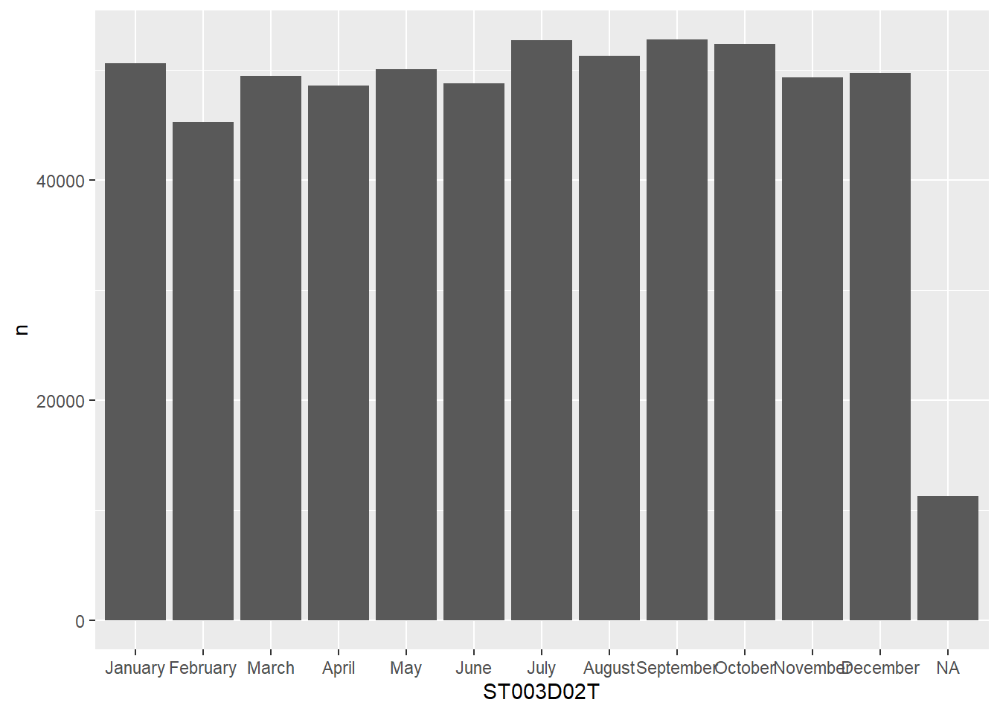
To re-order the columns to match the number of students, we can either try to do this manually, which is rather cumbersome:
my_levels <- c("July", "September", "January", "March", "February","April", "May", "June", "August", "October", "November", "December", "Valid Skip", "Not Applicable", "Invalid", "No Response")
grph_data$ST003D02T <- factor(grph_data$ST003D02T, levels=my_levels)
ggplot(data=grph_data, aes(x=ST003D02T, y=n)) +
geom_bar(stat = "identity")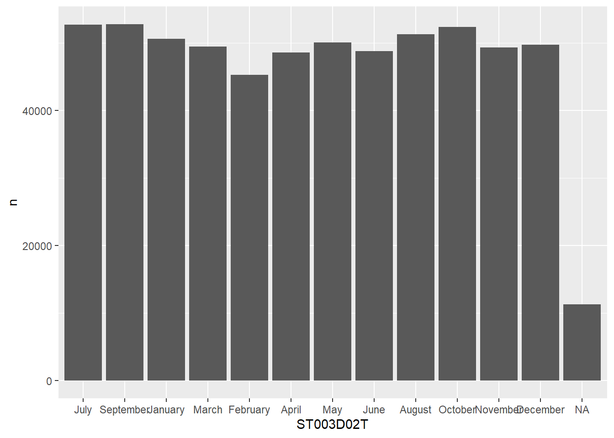
Or get R to do this for us:
# get the levels in order and pull/create a vector of them
my_levels <- grph_data %>% arrange(desc(n)) %>% pull(ST003D02T)
# reassign the re-ordered levels to the dataframe column
grph_data$ST003D02T <- factor(grph_data$ST003D02T, levels=my_levels)
ggplot(data=grph_data, aes(x=ST003D02T, y=n)) +
geom_bar(stat = "identity")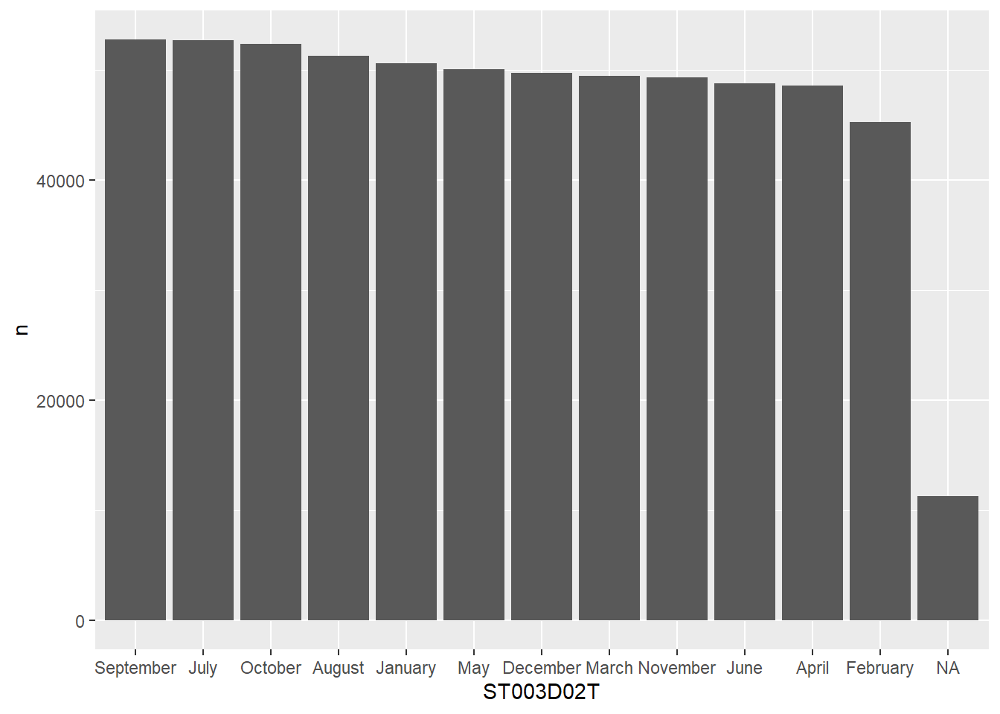
To learn a lot more about factors, see Hadley’s chapter
2.12 Seminar tasks
2.12.1 Student dataset
- How many unique values are there in the
OCOD3field for student intended future occupation? How does the most desired career vary by gender?
- write code to work out the
meanandmediannumber of hours of learning MathsMMINSfor each countryCNT.
- what is the fourth most popular language at home
LANGNspoken by students in schools in theUnited Kingdom, how does this compare toFrance?
- Spot the five errors with the following code. Can you make it work? What does it do?
# Work out when more time spent in language lessons than maths lessons
PISA_2018_lang < PISA_2018 %>%
rename(gender = ST004D01T) %>%
mutate(language importance = LMINS - MMINS) %>%
filter(is.na(language_importance)) %>%
group_by(CNT gender) %>%
summarise(students = n,
lang_win = sum(language_importance >= 0),
per_lang_win = 100*(lang_win/students))answer
# Work out when more time spent in language lessons than maths lessons
PISA_2018_lang <- PISA_2018 %>% #1 make sure you have the assignment arrow <-
rename(gender = ST004D01T) %>%
mutate(language_importance = LMINS - MMINS) %>% #2 _ not space in name of field
filter(!is.na(language_importance)) %>% #3 this needs to be !is.na, otherwise it'll return nothing
group_by(CNT, gender) %>% #4 missing comma
summarise(students = n(), #5 missing brackets on the n() command
lang_win = sum(language_importance >= 0),
per_lang_win = 100*(lang_win/students))- By gender work out the average attitudes to learning activities
ATTLNACT
2.12.2 Teacher dataset
To further check your understanding of this section you will be attempting to analyse the 2018 teacher dataset. This dataset includes records for 107367 teachers from 19 countries, including 351 columns, covering attitudinal, demographic and workplace data. You can find the dataset here in the .parquet format.
- Work out how many teachers are in the dataset for the
United Kingdom
- For each country
CNTby genderTC001Q01NA, what is themeantime that a teacher has been in the teaching professionTC007Q02NA? Include the number of teachers in each group. Order this to show the country with the longest serving workforce:
- For each country
CNTfind out which teachers provide the most opportunities for students to improve their critical thinking skillsTC207Q06HA:
- Explore the data on use of technology in the classroom
TC169____
Save the results of one of the above questions using
write_csv().[EXTENSION] explore the dataset and find out some more interesting facts to share with your group
3 Introduction to graphs
3.1 Introduction to graphing in R
The tidyverse includes the incredibly powerful ggplot2 package. This package is pretty much the industry standard for making graphs for publication. ggplot2 is built on the grammar of graphics where you build graphs by specifying underlying attributes and layering geometric objects on top of each other. In the diagram below you can see how a graph is built from geometric objects (the things that are plotted such as points and bars) a scale, and plot annotations (e.g. a key, title etc). You can then apply faceting to the graph to automatically split one graph into multiple plots, allowing you to easily compare different groupings. Publications, such as the Financial Times, make daily use of ggplot2.
The basic structure of ggplot code is to combine different graphing elements through the use of the + operator. To demonstrate this, let’s look at the relationship between the percentage of males in a school and the percentage of the school taking computer science:
library(tidyverse)
# wrangle our data
graph_data <- PISA_2018 %>%
filter(CNT %in% c("France", "United Kingdom"))
# display a graph of the results
ggplot(data = graph_data,
aes(x = ESCS, y = PV1MATH, colour = ST004D01T)) +
geom_point() +
geom_smooth(method = 'lm') +
facet_wrap(. ~ CNT) +
ggtitle("Comparison of poverty and Maths result, by gender and country") +
theme(legend.position = "bottom")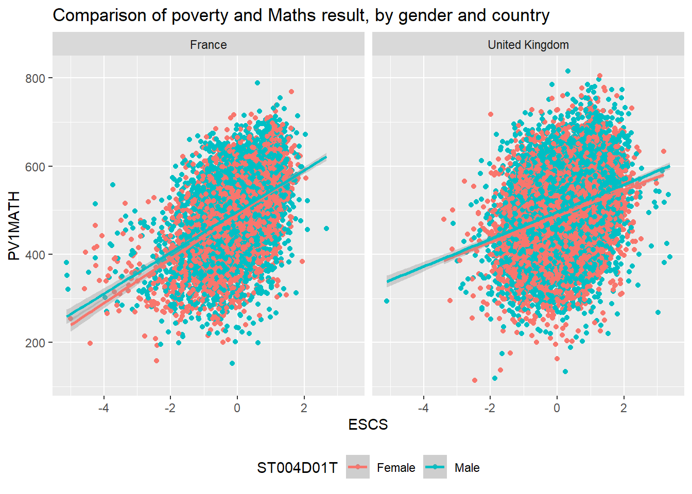
Hopefully you can work out what lines 1-3 do from the previous chapter, let’s focus on the ggplot commands:
- 6-7 these lines set up the
ggplotgiving it the table objectgraph_dataas its data input and setting up the aesthetics for the rest of the graph elements using columns fromgraph_data. Theaes(<attribute>, <attribute>, ...)command allows us to specify aesthetic elements of the graph that will change dependent on the dataset we use. In the PISA_2018 data set, the variable ESCS refers to an index of economic status, and PV1Math, is the plausible value of the mathematics score. We set the x and y variablesx=ESCSandy=PV1MATH, definingaes()insideggplot()means we will pass down these values to subsequent geometric objects so we don’t have to define thesexandyaxis items again and again. - 8 using the data and
aesvalues defined on lines 6-7,geom_pointuses thexandyvalues defined on line 19 to draw a point for each school in our dataset. There are lots of different parameters we could givegeom_pointe.g. specifying size and shape, but here we are content with using the defaults. - 9 we add another geometric object on top of the points, this time we add a line of best fit
geom_smooth, again this geometric object uses the values specified on lines 6-7, and we define themethodaslm, to calculate a linear model line of best fit. - 10 next we use
facet_wrap(. ~ CNT)to create a graph for each group ofCNTin the dataset, i.e. a graph for each country defined on line 3. - 11 finally we customise the title of the graph,
ggtitle, ready for display.
3.2 Geoms
There are about 40 different geometric objects in ggplot, allowing you to create almost any sort of graph. We will be exploring a few of them in detail, but if you want to explore others, please follow some of the links below:
- geom_bar for creating bar charts and histograms
- geom_point for plotting single points
- geom_line for connecting points together and showing trends
- geom_text for adding text labels to data points
- geom_boxplot for representing the range of data
- geom_hex for creating heat maps
- geom_map for adding geographic maps
- geom_smooth for adding lines of best fit
3.2.1 geom_point
Rather unsurprisingly, geom_point allows us to plot a layer of points using x and y coordinates. The below example shows how we can specify within the ggplot function data=school_plot_data. We then define the aesthetic attributes of the graph, passing the x x=NumberOfBoys and y y=NumberOfGirls values.
# create a new dataframe of maths and reading scores by country and OECD status
country_plot_data <- PISA_2018 %>%
group_by(OECD, CNT) %>%
summarise(mean_maths = mean(PV1MATH),
mean_read = mean(PV1READ),
sz = n())
# using this new dataframe, show the relationship between maths and reading score
# using geom_points
ggplot(data=country_plot_data,
aes(x=mean_maths, y=mean_read)) +
geom_point(aes(size=sz, colour=OECD), alpha = 0.6)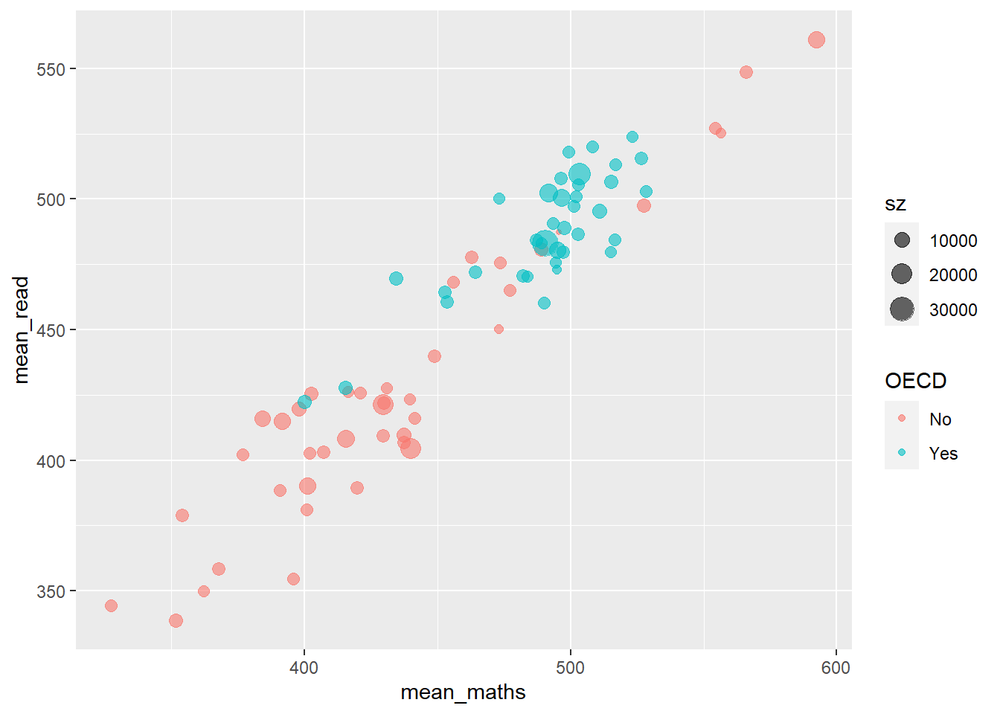
- In line 3 above we pipe the large data.frame
PISA_2018to apply a number of functions. - Line 4 groups by
OECD(a Yes or No indicating membership) andCNT(the name of the country). - Lines 5-6 calculate the
meanmathematics and reading score, and create new variables (mean_maths, andmean_read) for their values. - In addition, in line 7, the variables
szis created which counts the number of responses per country through then()command. - This whole pipe is then saved to the
country_plot_dataobject
This new dataframe is then passed to ggplot.
- In line 9, we specify the data that should be plotted - the new dataframe
country_plot_datawe have created. - Line 10, then we pass the
xandyvariables,mean_maths, andmean_read, inside the aesthetic function. - In line 11, we make a number of tweaks to the points: first setting the aesthetics - the
sizeof the points is linked to theszvariable we created, the number of responses per country, and thecolouris linked toOECDmembership. Finally (and note this is outside theaesbrackets, we set analphavalue which makes the point slightly transparent, which is more visually appealing where points overlap.
Switching between the pipes and ggplot can get rather confusing. A very common mistake in using ggplot is to try and link together the geom_ elements with a pipe command %>% rather than the +.
3.2.2 Questions
- Spot the three errors in this graph code
- Using the
PISA_2018dataset, plot a graph for students from Norway to help you work out whether there is a relationship between povertyESCSand maths gradePV1MATH. Colour each point with the gender of the student. Give the graph sensiblexandylabels (e.g.xlab("label")).
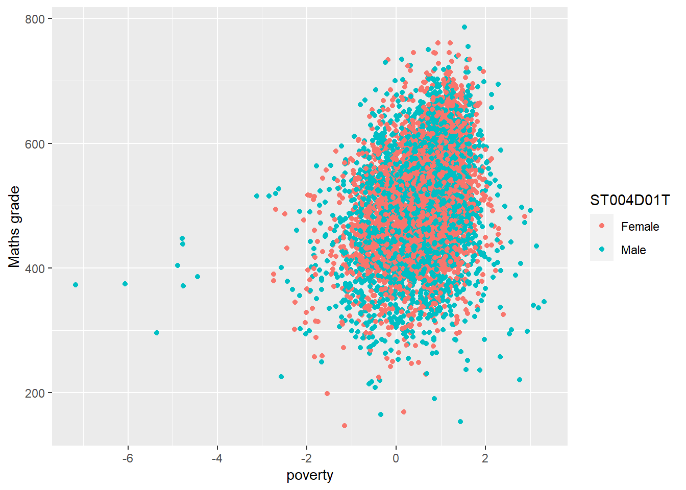
- Using the
PISA_2018dataset for each countryCNT, create a graph to explore how themedianof the sense of school belongingBELONGrelates to themedianof the disciplinary climate in the schoolDISCLIMA, adjust the colour of each point to reflect themeanwealth of students in each countryESCS.
HINT: You’ll need create a new dataframe with summarised variables for median_belong, median_discipline and mean_wealth.
HINT: To make your colours stand out more, add + scale_color_gradientn(colours = rainbow(3)) to the end of your plot.
3.2.3 Questions
- Using the TIMSS dataset, and only using schools from England, Finland and USA, plot to see how the number of computers
BCBG07is related to the Instruction Affected Resource Shortage (Mathematics)BCBGMRS.colourthe points in using the countryCNTRY.
- Using
ifelse, add a column to TIMSS calledregion, recode “NOR”, “SWE” and “FIN” to be “Nordic” and everyone else “RestOfWorld”.
- Using the dataset from Q2, Count the number of schools in each of the two regions and the median number of taught hours
BCDGTIHY.
- Using the data from Q2 (take a look at the answers if you couldn’t work it out), plot a graph of:
- school’s teaching time per year
BCDGTIHYagainst the behavioural issues that they haveBCBGDAS. -
colourthe points to show the difference between “Nordic” and “RestOfWorld” schools. - Provide sensible labels for the
xandyaxis - change the
alphaof each point so schools don’t blot each other out - add a line of best fit to see how the two axis are related
- school’s teaching time per year
3.2.4 geom_bar
The geom_bar function is versatile, allowing the creation of bar, multiple bar, stacked bar charts and histograms. This first example shows how we can use bar charts to represent the quality ratings given by the Office of Standards in Education (Ofsted) to schools in different parts of the country:
- 1 to 3 gets the schools dataset and filters it to only include schools that are Open, which are in recognised Region.
- 4 filters only those rows containing the OfstedRating listed, removing any
NAor other values. - 6 to 7 we pass the
plot_schoolsdataset created on lines 1 to 4 to ggplot and set thexaxis to the be the Region. Note, we don’t set theyaxis, as geom_bar will calculate this for us - 8 we pass the
plot_schoolsandx=Regiontogeom_bar, which counts the number of rows (schools) in each Region and creates a bar of that height.
The graph above gives us a feel for the data, but it doesn’t tell us the Ofsted ratings for each Region and the a axis labels are a mess. We need to add a fill to the geom_bar and adjust the theme:
- 3 using the
fillattributeaes(fill=OfstedRating)will create a stacked and coloured bar to show the number of schools gaining each OftstedRating in each Region - 4 the
themefunction andaxis.text.xadjust the x axis labels, rotating them 90 degrees
We can now make rough comparisons between the different number of each Ofsted rating. But it remains hard to compare the percentage split. For example the number of Good and Outstanding schools in London is hard to compare with the North East, as the total number of schools in the North East is much smaller than the number of schools in London. Additionally, the order of the bars seems random, we want to have Outstanding at the top and Inadequate at the bottom, not next to each other:
- 3 to 4 converts OfstedRating from the character datatype to a factor. Factors allow us to categorise the data we store, limiting the number of values a column can hold, in this case we are limiting it to the levels specified, with the order given to levels specifying the order that this column’s data will be displayed in graphs.
- 5
positiontells ggplot what to do when a bar on the x axis is made up of multiple elements, in this caseposition="fill"will take each x axis bar grouping and work out the fractional value of each Ofsted rating for each Region. - 7 when we created the factor on lines 3-4 to pass to the fill command, it also created a really inconvenient title for the graph legend: factor(OfstedRating, levels = c(“Outstanding”, “Good”, “Requires improvement”, “Inadequate”)).
scale_fill_discretelet’s us provide a more sensible title for the key.
We might also want to look at this graph on a Region by Region basis, at the moment it’s very hard to tell if the East Midlands have more schools that are Outstanding, or more schools that Require improvement. To do compare the bars in each x axis group we can use the position command, setting it to position="dodge":
3.2.4.1 Raising the bars yourself
ggplot can do a lot of the hard work when putting together bar charts, but there might also be times when you want to use pipes to calculate summary values that you then want plot. That is, you want to specify the heights of the bars yourself. To do this we will specify the y axis in the aes and use stat="indentity" to tell ggplot that’s what we’re doing. Take the example where you want to find the overall percentages of each grade given to the four single sciences in one year (can we say one is harder than another?):
plot_data <- results %>%
filter(Description %in% c("Physics", "Biology", "Chemistry", "Computer Studies/Computing"),
Qualification == "GCSE (9-1) Full Course") %>%
group_by(Description, Grade) %>%
summarise(total_grade = sum(Entries, na.rm=TRUE)) %>%
mutate(total_entries = max(total_grade, na.rm=TRUE),
per_entries = total_grade/total_entries) %>%
filter(Grade != "Total number entered")
ggplot(data=plot_data, aes(x=Grade, y=per_entries)) +
geom_bar(aes(fill=Description),
position="dodge",
stat="identity")- 1 to 8 creates a dataframe
plot_datathat calculates the percentage of entries for each science subject achieving each grade, this is calledper_entries - 10 as we are setting the heights of the bars ourselves, we need to give the ggplot aes command a y value, in this case
y=per_entries - 11 the geom_bar is given a fill value of
Description, this will allow us to see the plots of different subjects - 12 we use
position="dodge"as we want the percentage grades of each subject to be next to each other so we can look for differences in heights - 13
stat="identity"tellsgeom_barthat you have defined your own bar heights in theyattribute and not to count the number of rows.
3.2.5 Questions
- Can you spot the 4 errors in this code.
- Create a bar chart showing the total number of open Independent schools for each Gender
- Using the TIMSS dataset:
-
filterto only look at the USA and ENG - make a graph to show the overall picture of Parental expectations for student achievement (
BCBG14G). - Make the
xaxis afactorso the graph makes sense -
fillthe bars in to show how many schools each bar came from each country -
positionbars so they aren’t stacked on top of each other
-
- Repeat Q3, but this time work out the percentage of responses for each option in
BCBG14Gby country. Display a graph showing this “indentity”.
- [Extension] Explore other patterns in: “Teachers’ ability to inspire students”
BCBG14Dand “Parental expectations for student achievement”BCBG14G
3.2.6 geom_text
TODO: if time
3.3 Faceting
Faceting allows you to easily create multiple graphs from one dataset and one graph definition by splitting the data on different factors. By defining
facet_wrap(<factor_to_split> ~ .)
Let’s return to grammar school dataset from Section 2.11.1, we can easily plot this to show the relationship between poverty and school size, showing that grammar schools tend to serve quite affluent cohorts and that larger secondary schools tend to serve poorer cohorts:
plot_data <- schools %>%
filter(Open=="Open",
Phase=="Secondary") %>%
mutate(sch_type =
ifelse(EstablishmentGroup != "Independent schools" &
AdmissionsPolicy=="Selective",
"GRAMMAR",
"NOT GRAMMAR")) %>%
arrange(desc(sch_type))
ggplot(data=plot_data, aes(x=FSM, y=NumberOfBoys + NumberOfGirls)) +
geom_point(aes(colour=sch_type)) +
geom_smooth(method ="lm") +
theme(legend.position="bottom")What isn’t clear about the above is how this changes on a regional basis. We might be tempted to filter on each region and create separate charts for each regional name. But this would take a considerable amount of time and effort. Another way to do this is using facet_wrap(Region ~ .). The below example uses the Region column to create the same chart for each Region, only using the data that is recorded as being in that region:
3.4 Exporting plots
ggplot can export data in a variety of formats suitable for printing, publication and the web. Once you have created a graph and stored it in an object, the command to save the graph to your hard drive is:
ggsave(<file_name_and_extension>, <object_name>)
If you want to change the output format, just change the extension of the file you are saving:
- “poverty_size.pdf” perfect for publication and printing, large size
- “poverty_size.svg” the same as pdf, also suitable for putting on webpages
- “poverty_size.png” smaller file size, suitable for websites and presentations
- “poverty_size.jpg” same as the png
3.5 Additional support on graphing
3.6 Using R to do descriptive statistics and plot graphs
You can find the code used in the video below:
Show the code
# Introduction to plotting graphs
#
# Download data from /Users/k1765032/Library/CloudStorage/GoogleDrive-richardandrewbrock@gmail.com/.shortcut-targets-by-id/1c3CkaEBOICzepArDfjQUP34W2BYhFjM4/PISR/Data/PISA/subset/Students_2018_RBDP_none_levels.rds
# You want the file: Students_2018_RBDP_none_levels.rds
# and place in your own file system
# change loc to load the data directly. Loading into R might take a few minutes
library(tidyverse)
loc <- "/Users/k1765032/Library/CloudStorage/GoogleDrive-richardandrewbrock@gmail.com/.shortcut-targets-by-id/1c3CkaEBOICzepArDfjQUP34W2BYhFjM4/PISR/Data/PISA/subset/Students_2018_RBDP_none_levels.rds"
PISA_2018 <- read_rds(loc)
# Calculating means of groups
# The PISA_2018 dataframe is piped to a new dataframe MeanPISA
# The data are grouped by the country variable (CNT)
# The countries of interest are chosen (UK, France, Germany and the US)
# The summarise function is used to output the mean and standard deviation score for each country
# on the Science Plausible Value (PV1SCIE) and NAs are ignored na.rm=TRUE
MeanPISA <- PISA_2018 %>%
group_by(CNT) %>%
filter(CNT=="United Kingdom" | CNT== "France" | CNT== "Germany" | CNT=="United States") %>%
summarise(mean_sci = mean(PV1SCIE, na.rm=TRUE), sd_sci= sd(PV1SCIE, na.rm=TRUE))
print(MeanPISA)
# To plot data we can use the ggplot function.
# We will start by plotting a column graph use geom_col
# We specify the data set for ggplot to use (MeanPisa) and then
# define the x and y variables:
# ggplot(MeanPISA,
# aes(x=CNT, y=mean_sci))
# geom_col() (Note the plus is on the line before) plots the graph and the fill colour is set to red
# The next three lines set the formatting of the axis text and add x and y axis labels
ggplot(MeanPISA,
aes(x=CNT, y=mean_sci))+
geom_col(fill="red") +
theme(axis.text.x = element_text(angle = 90, hjust=0.95, vjust=0.2, size=10)) +
xlab("Country") +
ylab("Science Score")
# For plotting a scatter plot or PISA reading scores against science scores
#, first we make a managable data set
# I will filter the data set to include only the UK data
# and remove any NAs
UKData <- PISA_2018 %>%
filter(CNT=="United Kingdom") %>%
drop_na(PV1SCIE)
# This time I will use ggplot to plot a scatter graph
# I feed UKDATA to ggplot, specify the x (PISA Reading score)
# And y (PISA science score). This time, I have linked the colour
# to a variable (ST004D01T) which is the gender value, giving
# plot points of different colours for boys and girls
# To produce a scatter plot, I use geom_point to plot points,
# Giving the size of point and the transparency (alpha=0.5) -
# some transparency of points is helpful when plots become dense
# The x and y lables are added
# Finally, a line is plotted - geom_smooth(method='lm')
# sets the line to a linear ('lm') line
ggplot(UKData,
aes(x=PV1READ, y=PV1SCIE, colour=ST004D01T)) +
geom_point(size=0.1, alpha=0.5) +
ylab("Science Score") +
xlab("Reading Score") +
geom_smooth(method='lm')
# Where R becomes very powerful is being able to produce multiple charts rapidly
# In the code below, I plot reading against science scores as above, but this time
# Use the entire data set - for the whole world!
# All the steps are the same, except, I use the facet_wrap, a way to create multiple
# graph panels - the instruction creates a set of graphs for each country
WorldData <- PISA_2018 %>%
drop_na(PV1SCIE)
ggplot(WorldData,
aes(x=PV1READ, y=PV1SCIE, colour=ST004D01T)) +
geom_point(size=0.1, alpha=0.5) +
ylab("Science Score") +
xlab("Reading Score") +
geom_smooth(method='lm') +
facet_wrap(CNT~.)4 Group performance in STEM
4.1 Seminar activities
4.1.1 Discussion activity
Based on Davis (2013) Link to chapter

Consider how and why we think of things as being ‘normal’ (or not). Some suggested questions are:
- What were your immediate thoughts on reading this paper?
- In what ways have you yourself been aware of being compared to norms or ideals?
- How do you feel about that? As an education professional, have you made comparisons between individual students and expected norms or averages? Between groups of students?
- When and how was this useful?
- When and how was this problematic?
4.1.2 Tasks
Getting set up
Using the following .csv data set and the read.csv command: DfE_SEN_School_Level to load data on Special Educational Needs (SEN) students in UK schools.
You may find these explanation of acronyms used in the spreadsheet useful:
• LA stands for local authority and is an administrative region, for example, Camden and Greenwich.
• FSM refers to students who receive free school means - this funding is available for students whose parents or carers receive certain government benefits, typically due to relatively low income. It is taken, by some policy makers and researchers, as a marker of socioeconomic disadvantage
• SEN support indicates a school has made a judgement that a student needs further support in school because of special educational needs or disabilities, for example dyslexia or speech and communication needs. If students need a higher level of support, they can be assessed by a specialist and are then placed on an education, health and care (EHC) plan. Students on EHC plans receive a higher level of support than those on SEN support.
• A Pupil Referral Unit (PRU) is a type of school for children who are not able to attend a mainstream school due to illness or behavioural issues that have led to being excluded.
• A special school is a school that provides support for students with special educational needs, for example, autism or physical disabilities, like deafness.
• EHC_primary_need_spld = specific learning difficulties, for example, dyslexia and dyspraxia
• EHC_primary_need_mld = moderate learning difficulties, indicating a delay in development
• EHC_primary_need_sld = severe learning difficulties, indicating significant learning needs
• EHC_primary_need_pmld = profound and multiple learning difficulties - students with multiple and complex needs
4.1.2.1 Descriptive statistics
We will now learn how to calculate means of subgroups of schools using the filter and summarise functions. We can use filter to focus on only a subset of our data.frame. For example, below, we choose to focus on schools in Camden.
In line 3 below, we focus on schools in Camden. Note that, in filter we use ==. Then we use summarise to calculate the totals of the variables we are interested in, students getting SEN support (SEN.support), students on an EHC plan (EHC.plan) and the total (Total.Pupils).
# Selecting only schools in one LA and finding the mean of various variables
DfE_SEN_data %>%
filter(la_name=="Camden") %>% # Filter to only include schools in Camden (note the ==)
summarise(SEN_total=sum(SEN.support),
EHCplan=sum(EHC.plan),
Total=sum(Total.pupils)) SEN_total EHCplan Total
1 4389 1107 31622If you run the code you should get:
| SEN_total | EHCPlan | Total |
|---|---|---|
| 4389 | 1107 | 31622 |
If you want to filter by a different vector (that is, a different column in the table), don’t forget to change the name of the vector in the filter command, for example, to filter by the gender of pupils at the school. Don’t forget to use the %>% and the == in filter!
4.1.2.2 Task 1
- Find the total number of students with SEN support, EHC plans, and the total number of students in Greenwich
Make sure you have spelled the name of the variables SEN.support, etc. correctly. They are case sensitive. You can use the function colnames(DfE_SEN_data) to get a list of names and copy and paste them
You should get:
| SEN_total | EHCPlan | Total |
|---|---|---|
| 7204 | 1897 | 48354 |
4.1.2.3 Task 2
- Select a single local authority (LA) or region.
- Calculate the total number of pupils in the LA, the total number listed as receiving SEN support, and the total number with an EHC plan.
- Calculate the totals for all of London (note, you will need to change the name of the column you are filtering by).
- An extension task - use the functions
mean()to calculate mean values, andsd()to calculate standard deviation in thesummarisefunctions above, in Camden schools.
Answer
SEN_total EHCplan
1 6179 2202Answer
SEN_total EHCplan
1 170735 60250Answer
SENmean EHCmean SENsd EHCsd
1 54.2188 19.13306 53.53907 34.47368Calculating Percentages
Next, we will use the totals of SEN supported and EHC plan students to calculate percentages. We simply do an additional summarise with the equation to find the percentage of EHCplan students =(EHCplan/Total)*100.
When using summarise, be careful to add a comma after each function, and check you have closed as many brackets as you open!
Answer
# Descriptive Statistics using the DfE SEN School Level Data
# Calculating Percentages of students on EHC plans
Percenttable <- DfE_SEN_data %>%
group_by(district_administrative_name) %>%
summarise(SEN_support = sum(SEN.support),
EHCplan = sum(EHC.plan),
Total = sum(Total.pupils),
percentageEHCplan = (EHCplan/Total)*100)
print(Percenttable)# A tibble: 310 × 5
district_administrative_name SEN_support EHCplan Total percentageEHCplan
<chr> <int> <int> <int> <dbl>
1 Adur 1427 350 9315 3.76
2 Allerdale 1701 523 14994 3.49
3 Amber Valley 2409 823 18819 4.37
4 Arun 2621 556 18742 2.97
5 Ashfield 2485 420 20140 2.09
6 Ashford 2357 1280 22832 5.61
7 Babergh 1910 675 15097 4.47
8 Barking and Dagenham 5286 1570 45153 3.48
9 Barnet 7269 2505 68481 3.66
10 Barnsley 3849 1579 35271 4.48
# … with 300 more rowsThis gives a table as an output, with the percentage of students on an EHC plan in each local authority.
You can use the signif function to display a given number of decimal places. Here, I have used signif( ,2) to limit the percentage calculation to two significant figures
# Calculating Percentages of students on EHC plans
Percenttable <- DfE_SEN_data %>%
group_by(district_administrative_name) %>%
summarise(SEN_support = sum(SEN.support),
EHCplan = sum(EHC.plan),
Total = sum(Total.pupils),
percentageEHCplan = signif((EHCplan/Total)*100,2))
print(Percenttable)# A tibble: 310 × 5
district_administrative_name SEN_support EHCplan Total percentageEHCplan
<chr> <int> <int> <int> <dbl>
1 Adur 1427 350 9315 3.8
2 Allerdale 1701 523 14994 3.5
3 Amber Valley 2409 823 18819 4.4
4 Arun 2621 556 18742 3
5 Ashfield 2485 420 20140 2.1
6 Ashford 2357 1280 22832 5.6
7 Babergh 1910 675 15097 4.5
8 Barking and Dagenham 5286 1570 45153 3.5
9 Barnet 7269 2505 68481 3.7
10 Barnsley 3849 1579 35271 4.5
# … with 300 more rows4.1.2.4 Task 3
For each administrative district (local authority), calculate the percentages of pupils with SEN support.
Don’t forget to use the pipe operator %>% between each function
Answer
# Descriptive Statistics using the DfE SEN School Level Data
# Calculating Percentages of students with SEN support in each administrative district (local authority)
Percenttable <- DfE_SEN_data %>%
group_by(district_administrative_name) %>%
summarise(SEN_support = sum(SEN.support),
EHCplan = sum(EHC.plan),
Total = sum(Total.pupils),
percentagesupport = (SEN_support/Total)*100)
print(Percenttable)# A tibble: 310 × 5
district_administrative_name SEN_support EHCplan Total percentagesupport
<chr> <int> <int> <int> <dbl>
1 Adur 1427 350 9315 15.3
2 Allerdale 1701 523 14994 11.3
3 Amber Valley 2409 823 18819 12.8
4 Arun 2621 556 18742 14.0
5 Ashfield 2485 420 20140 12.3
6 Ashford 2357 1280 22832 10.3
7 Babergh 1910 675 15097 12.7
8 Barking and Dagenham 5286 1570 45153 11.7
9 Barnet 7269 2505 68481 10.6
10 Barnsley 3849 1579 35271 10.9
# … with 300 more rowsFinding the mean, median, maximum, and minimum
- Example, Find the
mean,median,maximum andminimum percentages of students with SEN support in each administrative district.
To find the mean, we can use summarise to find the mean (‘summarise(Mean_support=mean(SEN.support))’). Similarly, we can use the max, min and median function to find the respective values (modes are little more complicated).
# !! WARNING !! library(psych) should come before library(tidyverse)
library(psych)
library(tidyverse)
# We do the steps above to create our percentage table for SEN support
Descrip <- DfE_SEN_data %>%
group_by(district_administrative_name) %>%
summarise(SEN_support = sum(SEN.support),
Total = sum(Total.pupils),
percentagesupport = (SEN_support/Total)*100,
Max_support = max(SEN.support),
Mean_support = mean(SEN.support),
Min_support=min(SEN.support),
Median_support=median(SEN.support))
# describe is a function from the psych package (remember to load tidyverse after it) which gives summary data for max, min, mean etc for the whole country.
print(Descrip) # A tibble: 310 × 8
district_administrati…¹ SEN_s…² Total perce…³ Max_s…⁴ Mean_…⁵ Min_s…⁶ Media…⁷
<chr> <int> <int> <dbl> <int> <dbl> <int> <dbl>
1 Adur 1427 9315 15.3 251 71.4 0 54.5
2 Allerdale 1701 14994 11.3 157 24.3 0 13
3 Amber Valley 2409 18819 12.8 182 33 0 23
4 Arun 2621 18742 14.0 213 57.0 0 32
5 Ashfield 2485 20140 12.3 309 50.7 0 35
6 Ashford 2357 22832 10.3 266 39.3 0 26
7 Babergh 1910 15097 12.7 333 34.1 0 14
8 Barking and Dagenham 5286 45153 11.7 288 81.3 0 68
9 Barnet 7269 68481 10.6 472 43.5 0 30
10 Barnsley 3849 35271 10.9 247 41.4 0 30
# … with 300 more rows, and abbreviated variable names
# ¹district_administrative_name, ²SEN_support, ³percentagesupport,
# ⁴Max_support, ⁵Mean_support, ⁶Min_support, ⁷Median_support# An alternative way to do this is to turn the table into the longer format
# This converts each entry in the table into an individual row in a list
# which can then be used to calculate descriptive statistics
#
# new_table <- DfE_SEN_data %>%
# group_by(district_administrative_name) %>%
# summarise(SEN_support = sum(SEN.support),
# EHCplan = sum(EHC.plan),
# Total = sum(Total.pupils))
#
# new_table %>%
# pivot_longer(!district_administrative_name,
# names_to = "variable",
# values_to = "value") %>%
# group_by(variable) %>%
# summarise(mean_value = mean(value),
# max_value = max(value),
# median_value = median(value))4.1.2.5 Task 4
::: question Find the mean, median, maximum and minimum percentages of students with EHC plans in each local authority for the whole country.
Find the mean, median, maximum and minimum percentages of students with EHC plans the UK as a whole, and for London. What differences can you see?
Answer
library(tidyverse)
# We do the steps above to create our percentage table for EHC plans
# after grouping by districts (LAs)
EHCDescrip <- DfE_SEN_data %>%
group_by(district_administrative_name) %>%
summarise(EHC_support = sum(EHC.plan),
Total = sum(Total.pupils),
percentagesupport = (EHC_support/Total)*100,
Max_support = max(EHC.plan),
Mean_support = mean(EHC.plan),
Min_support=min(EHC.plan),
Median_support=median(EHC.plan))
print(EHCDescrip)# A tibble: 310 × 8
district_administrati…¹ EHC_s…² Total perce…³ Max_s…⁴ Mean_…⁵ Min_s…⁶ Media…⁷
<chr> <int> <int> <dbl> <int> <dbl> <int> <dbl>
1 Adur 350 9315 3.76 135 17.5 0 9.5
2 Allerdale 523 14994 3.49 55 7.47 0 4
3 Amber Valley 823 18819 4.37 131 11.3 0 3
4 Arun 556 18742 2.97 63 12.1 1 7
5 Ashfield 420 20140 2.09 154 8.57 0 2
6 Ashford 1280 22832 5.61 324 21.3 0 5
7 Babergh 675 15097 4.47 160 12.1 0 3
8 Barking and Dagenham 1570 45153 3.48 290 24.2 0 16
9 Barnet 2505 68481 3.66 201 15 0 7
10 Barnsley 1579 35271 4.48 341 17.0 1 7
# … with 300 more rows, and abbreviated variable names
# ¹district_administrative_name, ²EHC_support, ³percentagesupport,
# ⁴Max_support, ⁵Mean_support, ⁶Min_support, ⁷Median_supportAnswer
# To get the descriptive statistics for EHC plans in all of the UK:
EHCDescripTotal <- DfE_SEN_data %>%
summarise(EHC_support = sum(EHC.plan),
Total = sum(Total.pupils),
percentageEHC = (EHC_support/Total)*100,
Max_EHC = max(EHC.plan),
Mean_EHC = mean(EHC.plan),
Min_EHC=min(EHC.plan),
Median_EHC=median(EHC.plan))
print(EHCDescripTotal) EHC_support Total percentageEHC Max_EHC Mean_EHC Min_EHC Median_EHC
1 355566 9000031 3.95072 706 14.5402 0 5Answer
# To get the descriptive statistics for EHC plans in London, we add a filter first
EHCDescripLon <- DfE_SEN_data %>%
filter(region_name=="London") %>%
summarise(EHC_support = sum(EHC.plan),
Total = sum(Total.pupils),
percentageEHC = (EHC_support/Total)*100,
Max_EHC = max(EHC.plan),
Mean_EHC = mean(EHC.plan),
Min_EHC=min(EHC.plan),
Median_EHC=median(EHC.plan))
print(EHCDescripLon) EHC_support Total percentageEHC Max_EHC Mean_EHC Min_EHC Median_EHC
1 60250 1457938 4.132549 468 19.13306 0 94.1.3 Graphing
Using the same data set: DfE_SEN_School_Level we are going to now plot some graphs
4.1.4 Column graphs
Example - plot a graph of the the % of students on EHC plans by gender of school
First, we want to pipe changes to a new data.frame we will use in the plot. I have called that data.frame genderplot. Then, I group_by sex_of_school_description, to get the schools grouped by whether they are single of mixed sex. Next I use the mutate function to create percentage columns, as we did before.
The new element here is using ggplot, R’s graphing function (more details on how to use geom_bar are in the section above: [geom_bar]).
First, you call ggplot and specify the data you want to use for the graph (in our case, the new data.frame we have created, genderplot). The next layer of ggplot is the aesthetics (aes), i.e., what our graph will look like. First, we tell ggplot what we want our x (sex_of_school_description) and y (percentageEHCplan) variables to be. Finally, we use geom_col() to plot a column graph.
# Presenting % on EHC by gender of school
genderplot <- DfE_SEN_data %>%
group_by(sex_of_school_description) %>%
summarise(SEN_support=sum(SEN.support),
EHCplan=sum(EHC.plan),
Total=sum(Total.pupils),
percentageEHCplan = (EHCplan/Total)*100,
percentagesupport = (SEN_support/Total)*100)
# using the genderplot data create a graph
ggplot(data=genderplot,
aes(x=sex_of_school_description,
y=percentageEHCplan)) +
geom_col()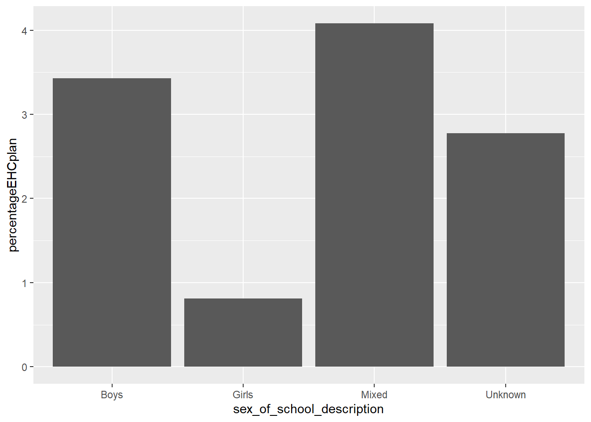
4.1.4.1 Task 5
Plot a column graph of the % of students of EHC plans by the type of school (the type_of_establishment variable)
Answer
# Calculate percentage on plan and support by type of school
estabdata<-DfE_SEN_data %>%
group_by(type_of_establishment) %>%
summarise(SEN_support=sum(SEN.support),
EHCplan=sum(EHC.plan),
Total=sum(Total.pupils),
percentageEHCplan = (EHCplan/Total)*100,
percentagesupport = (SEN_support/Total)*100)
# Plot the type of school data
ggplot(data=estabdata,
aes(x=type_of_establishment,
y=percentageEHCplan)) +
geom_col(fill="red")+ # I have filled the columns in red here
theme(axis.text.x = element_text(angle = 90, vjust = 0.5, hjust=1)) 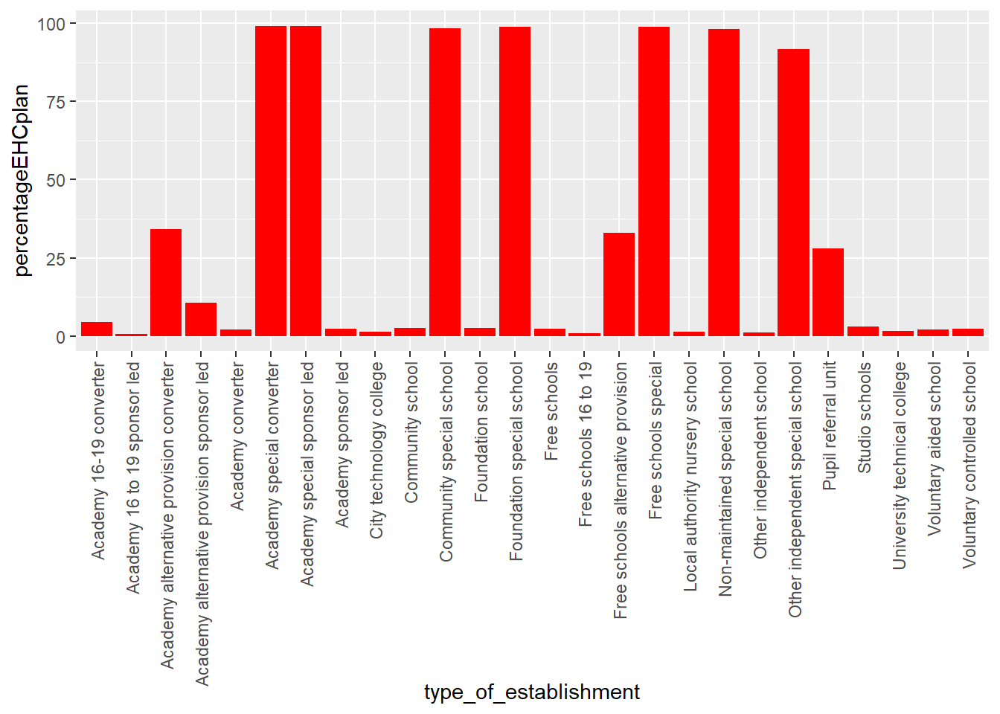
4.1.5 Scatter Graphs
To plot a scatter graph we can use the geom_point , which works in a similar way to geom_col .
Example
Plot a graph of total number of students (on the x-axis) against those with EHC plans (y-axis) for all schools in London First, I have used filter to select only London schools from the DfE dataset. The I pass ggplot the data set we want to use, in this case the filtered data.frame I have just created - plotdata. As with geom_col, I use ggplot and first specify the data I want to plot (‘ggplot(data=plotdata,’). Next, I set the aesthetic variables, to keep things simple,only the x and y variables. Then I call geom_point to plot the points as a scatter graph.
# Filter to create a dataframe of only London schools
plotdata<-DfE_SEN_data %>%
filter(region_name=="London")
# Plot the type of school data
ggplot(data=plotdata,
aes(x=Total.pupils,y=EHC.plan)) +
geom_point()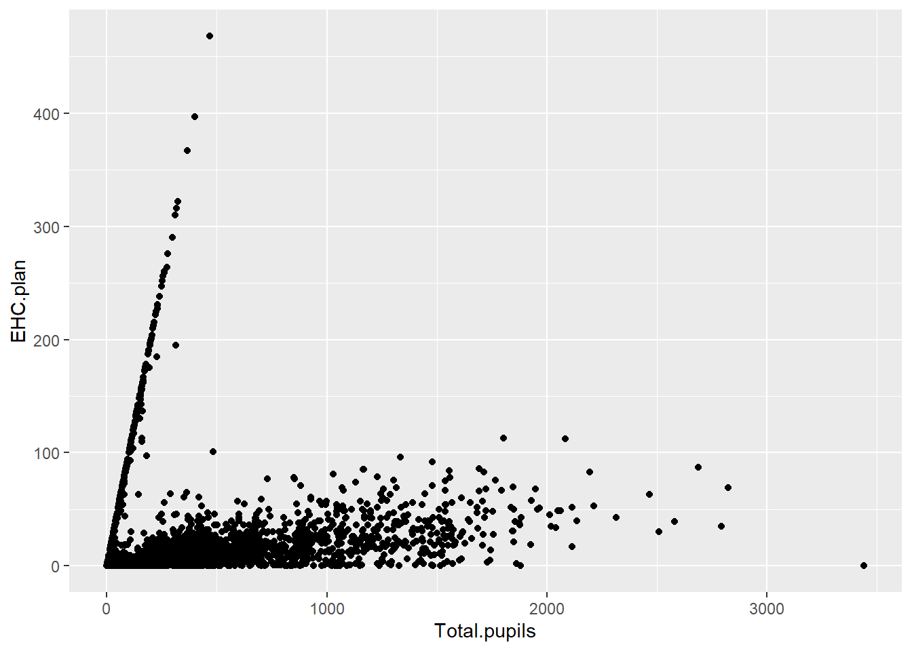
We can make things more pleasing by adding more features to the aesthetic variable. For example, I can add colour (‘geom_point(colour=“blue”)’) and rename the axes ‘labs(x=“Total number of pupils”, y=“Number of puupils on EHC plans”)’. Note when adding to ggplot, the ‘+’ should come at the end of the line before.
# Filter to create a dataframe of only London schools
plotdata<-DfE_SEN_data %>%
filter(region_name=="London")
# Plot the type of school data
ggplot(data=plotdata,
aes(x=Total.pupils,y=EHC.plan)) +
geom_point(colour="blue")+
labs(x="Total number of pupils", y="Number of pupils on EHC plans")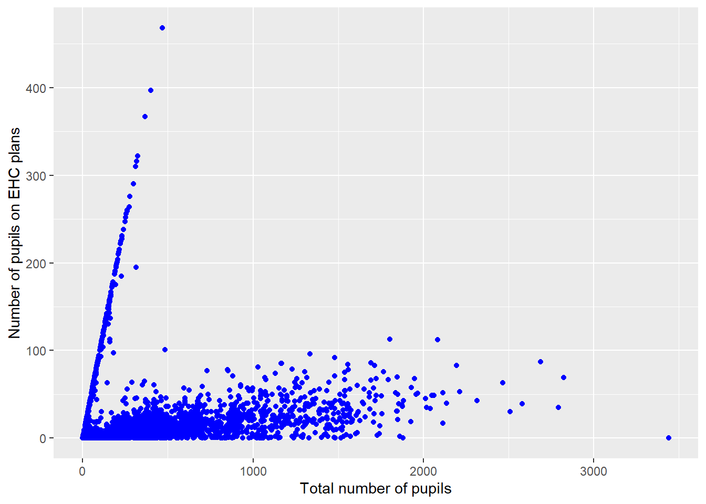
I can also add a line using (geom_smooth(method=‘lm’)) - here ‘lm’ specifies a linear plot (i.e. a straight line).
# Filtter to create a dataframe of only London schools
plotdata<-DfE_SEN_data %>%
filter(region_name=="London")
# Plot the type of school data
ggplot(data=plotdata,
aes(x=Total.pupils,y=EHC.plan)) +
geom_point(colour="blue")+
labs(x="Total number of pupils", y="Number of pupils on EHC plans")+
(geom_smooth(method='lm'))`geom_smooth()` using formula = 'y ~ x'I can also change the colour by another variable (‘aes(colour=type_of_establishment)’). I can vary the size of points and make them slightly transparent using (‘geom_point(alpha=0.4, size=0.3)’)
# Filter to create a dataframe of only London schools
plotdata<-DfE_SEN_data %>%
filter(region_name=="London")
# Plot the type of school data
ggplot(data=plotdata,
aes(x=Total.pupils,y=EHC.plan, colour=sex_of_school_description)) +
geom_point(alpha=0.4, size=0.3)+
labs(x="Total number of pupils", y="Number of puupils on EHC plans")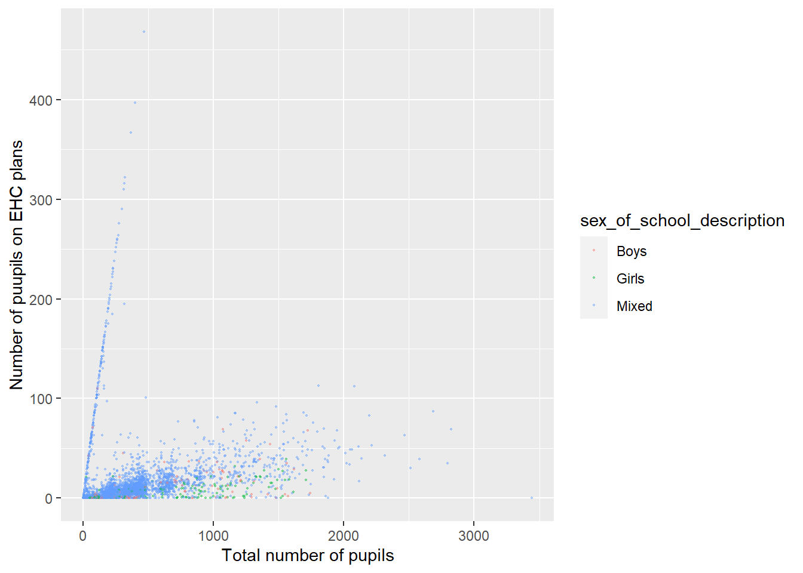
For a summary of all the elements of a graph you can change in ggplot - see this help sheet: https://posit.co/wp-content/uploads/2022/10/data-visualization-1.pdf
4.1.5.1 Task 6
For schools in London, plot the number of students receiving SEN support (SEN.Support) against those on an EHC plan (EHC.plan). The try varying the colour of points by type of school, adding a line and changing the size of plot point by size of school
Answer
# Filter to create a dataframe of only London schools
plotdata<-DfE_SEN_data %>%
filter(region_name=="London")
# Plot the type of school data
ggplot(data=plotdata,
aes(x=SEN.support,y=EHC.plan, colour="red", size=Total.pupils)) +
geom_point(alpha=0.4)+
labs(x="Total number of pupils", y="Number of puupils on EHC plans")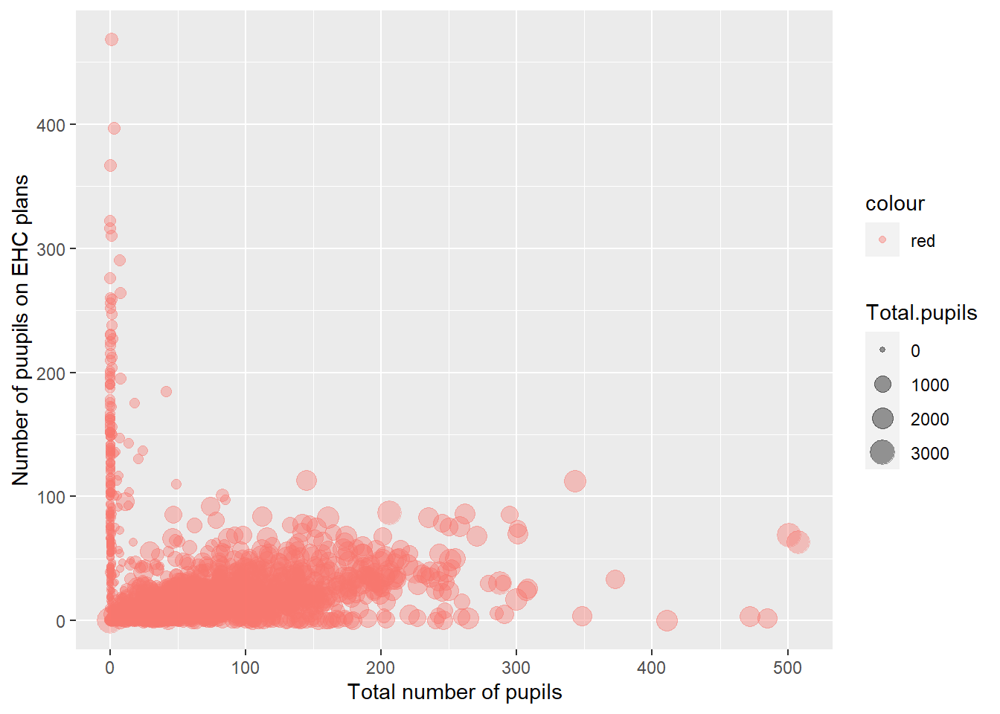
4.1.5.2 Extension task - Binning data
If we want to plot a frequency plot, the kind of chart that often gives a normal distribution, we need to divide data into counts of ranges of data. For example, if we wanted to plot a frequency chart of heights, we might divide the counts into those between 1.5m-1.6m, 1.6m-1.7m etc. To do this we can use the cut(<field>,<breaks>) function within the mutate command on a dataframe.
# Creates distribution of schools by size
binnedsize <- DfE_SEN_data %>% # Creates a new data frame with
mutate(Total.pupils = cut(Total.pupils, breaks=seq(0,1500, 25)))%>%
na.omit()
ggplot(binnedsize,
aes(x=Total.pupils))+
geom_bar(fill="dark green")+
theme(axis.text.x = element_text(angle = 90, vjust = 0.5, hjust=1))+
labs(y="Number of schools", x="Pupil range")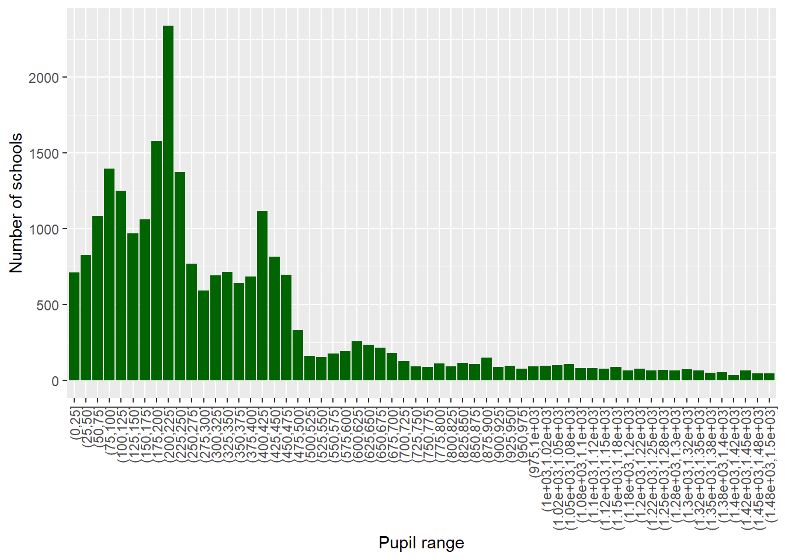
Create a graph of the counts of number of students on EHC plans in schools in the UK
5 Datasets
The examples shown in this booklet use a range of freely available datasets. We would like to encourage you to use one of these datasets in your own analysis, but you are welcome to use other datasets if agreed with your supervisor. This section will take you through the process of downloading, understanding and using these datasets.
5.1 PISA
5.2 What is PISA
The Programme for International Student Assessment (PISA) is an OECD initiative that looks at the reading, mathematics and science abilities of students aged 15 years old. Data is collected from ~38 OECD countries and other partner countries every three years.
| Dataset | Description | 03 | 06 | 09 | 12 | 15 | 18 |
|---|---|---|---|---|---|---|---|
| Student | demographic data on student participants | x | x | x | x | x | x |
| School | descriptive data about schools | x | x | x | x | x | x |
| Parent | a survey for student’s parents including information about home environments and parental education | x | x | ||||
| Teacher | demographic, teaching, qualification and training data | x | x | x | |||
| Cognitive | x | x | x | x | x | x |
PISA datasets above can be found on the OECD website. The links in the table above will allow you to download .rds versions of these files which we have created, though they might need additional editing, e.g. reducing the number of columns or changing the types of each column. If you want to find out more about what each field stores, take a look at the corresponding codebook, for example from 2018.
5.3 How to use it
The PISA datasets come in SPSS or SAS formats. The data used in this course comes directly from downloading the SPSS .sav files and using the haven package to clean it into a native R format suitable for analysis. There are a few quirks that you need to be aware of:
R uses levels (factors) instead of labelled data
All SPSS fields are labelled, and auto conversion into the native R dataframe format would make numeric fields factors(!?). To avoid this confusion we have stripped out the no-response data and replaced it with
NAvalues. This means that you won’t be able to tell the reason that a field is missing, and the following labels have all been set to NA:
| value | label |
|---|---|
| 95 | Valid Skip |
| 97 | Not Applicable |
| 98 | Invalid |
| 99 | No Response |
- As the fields are now using R’s native factor format you might find that the data doesn’t quite match the format of the table labels. For example,
CNTis labelled “Country code 3-character”, but the data is now instead the full country name. - the examples shown above use cut down PISA datasets, where only a limited number of columns are included.
5.4 Common issues
The PISA datasets can be absolutely huge and might bring your computer to its knees; if you are using a computer with less than 16Gb of RAM you might not be able to load some tables at all. Tables such as the Cognitive dataset have hundreds of thousands of rows and thousands of columns, loading them directly might lead to an error similar to this: Error: cannot allocate vector of size 2.1 Gb. This means that R can’t find enough RAM to load the dataset and has given up. You can see a rough estimate of how much RAM R is currently using the top Environment panel:

To get around this issues you can try to clean your current R environment using the brush tool:

This will drop all the current dataframes, objects, functions and packages that you have loaded meaning you will have to reload packages such as library(tidyverse) and library(haven) before you can attempt to reload the PISA tables.
A lack of RAM might also be the result of lots of other programs running concurrently on your computer. Try to close anything that you don’t need, web browsers can be particularly RAM hungry, so close them or as many tabs as you can.
If none of the above works, then please get in touch with the team, letting them know which table you need from which year, with which fields and for which countries. We will be able to provide you with a cutdown dataset.
5.5 Questions
5.5.1 What are Plausible Values?
In the PISA dataset, the outcomes of student tests are reported as plausible values, for example, in the variables of the science test (PV1SCIE, PV2SCIE, PV3SCIE, PV3SCIE, and PV5SCIE). It might seem counter intuitive that there are five values for a score on a test.
Plausible values (PVs) are a way of expressing the error in a measurement. The number of questions in the full PISA survey is very large, so students are randomly allocated to take a subset of questions (and even then, the test still takes two hours!). As no student completes the full set of questions, estimating how a student would have performed on the full question set involves some error. Plausible values are a way of expressing the uncertainty in the estimation of student scores.
One way of thinking of the PV scores is that they represent five different estimates of students’ abilities based on the questions they have answered. To decrease measurement error, five different approaches are applied to create five different estimates, the PV scores.
The PISA Data Analysis Manual suggests:
Population statistics should be estimated using each plausible value separately. The reported population statistic is then the average of each plausible value statistic. For instance, if one is interested in the correlation coefficient between the social index and the reading performance in PISA, then five correlation coefficients should be computed and then averaged
Plausible values should never be averaged at the student level, i.e. by computing in the dataset the mean of the five plausible values at the student level and then computing the statistic of interest once using that average PV value. Doing so would be equivalent to an EAP estimate, with a bias as described in the previous section.
(p. 100) Monseur et al. (2009)
- What are PV Values - exclude non-OECD? as mean too low
- difference between TA and NA for field names
5.5.2 Why are some countries OECD countries and others aren’t?
The Organisation for Economic Co-operation and Development (OECD) has 38 member states. PISA is run by the OECD and its member states normally take part in each PISA cycle, but other countries are allowed to take part as Partners. You can find more details on participation here.
Results for OECD members are generally higher than for Partner countries:
PISA_2018 %>%
group_by(OECD) %>%
summarise(country_n = length(unique(CNT)),
math_mean = mean(PV1MATH, na.rm=TRUE),
math_sd = sd(PV1MATH, na.rm=TRUE),
students_n = n())# A tibble: 2 × 5
OECD country_n math_mean math_sd students_n
<fct> <int> <dbl> <dbl> <int>
1 No 43 434. 106. 317477
2 Yes 37 490. 93.8 2945275.5.3 Why are the PV grades pivoting around the ~500 mark?
5.5.4 Why are the letters TA and NA used in some field names?
5.5.5 How are students selected to take part in PISA?
Students are selected by … (ref?)
From the data, you can see that 50% of schools entered fewer than 30 students into PISA.
5.6 Interesting papers and reading on PISA
5.7 Copyright
All PISA products are published under the Creative Commons Attribution-NonCommercial-ShareAlike 3.0 IGO (CC BY-NC-SA 3.0 IGO)
This includes the rds formatted datasets linked above.
5.7.1 fields to drop:
CNTRYID, NatCen
5.8 English Department for Education
Education provider details https://www.get-information-schools.service.gov.uk/Downloads
Results
5.9 TIMSS
5.10 Other datasets
Gender development index:
https://hdr.undp.org/gender-development-index#/indicies/GDI
ONS
https://www.ons.gov.uk/census/2011census/2011censusdata
https://www.ons.gov.uk/peoplepopulationandcommunity/populationandmigration/populationestimates/datasets/populationandhouseholdestimatesenglandandwalescensus2021
6 Questions and answers
6.1 Questions about R
Why doesn’t my select/filter statement work?
When you are loading packages, sometimes different packages have the same function names in them, and the functions themselves will do very different things. For example, there is a select function in the tidyverse, but also another select function in the package MASS that does something very different. If we load the tidyverse before loading MASS, then the MASS version of select is the one that will be used?!
To get around this make sure that you load the tidyverse after MASS, in fact you should always load the tidyverse last.
# A tibble: 53,940 × 3
carat cut color
<dbl> <ord> <ord>
1 0.23 Ideal E
2 0.21 Premium E
3 0.23 Good E
4 0.29 Premium I
5 0.31 Good J
6 0.24 Very Good J
7 0.24 Very Good I
8 0.26 Very Good H
9 0.22 Fair E
10 0.23 Very Good H
# … with 53,930 more rowsyou can also specify the package that select comes from (in this case from a package within the tidyverse called dplyr):
# A tibble: 53,940 × 3
carat cut color
<dbl> <ord> <ord>
1 0.23 Ideal E
2 0.21 Premium E
3 0.23 Good E
4 0.29 Premium I
5 0.31 Good J
6 0.24 Very Good J
7 0.24 Very Good I
8 0.26 Very Good H
9 0.22 Fair E
10 0.23 Very Good H
# … with 53,930 more rowsHow can I unload packages
If you are finding yourself with a conflict as mentioned above and want to unload packages, then you need to run the following code:
# adapted from: @mmfrgmpds https://stackoverflow.com/questions/7505547/detach-all-packages-while-working-in-r
while(!is.null(sessionInfo()$loadedOnly)){
lapply(names(sessionInfo()$loadedOnly), require, character.only = TRUE)
invisible(lapply(paste0('package:', names(sessionInfo()$otherPkgs)), detach, character.only=TRUE, unload=TRUE, force=TRUE))
}Why am I getting the error ‘could not find function “%>%”’
The pipe operator (%>%) is part of the tidyverse package - make sure you have installed tidyverse
I am getting the error: ‘“Error: Mapping should be created with aes() or aes_().”’ when using ggplot This may be caused by having a bracket after the geom rather than before it
6.2 About the coursework
?filter
7 References
References
Footnotes
As of November 2022, Tiobe has R as the 12th most popular programming language. Many other, contradictory, ranking systems exist.↩︎
camelCasehas a capital letter in the front or front and middle forming the camel’s hump(s), there are multiple naming conventions, it doesn’t matter which you pick, just stick to one of them.↩︎R was created to allow for vector programming, that is a programming language where you can apply operations to entire sets of values (vectors) at the same time, rather than having to cycle through them individually. Vector languages work in a way that is close to how mathematical notation works, making them well suited for performing mathematical functions.↩︎
You’ll sometimes see the words package and library used interchangeably, technically the library is the place where the packages are stored.↩︎
Even in this cut down format the PISA data might take a few minutes to load. You can find the full dataset here, but be warned, it might crash you machine when trying to load it! Plug your laptop into a power supply, and having 16GB of RAM highly recommended! You might also need to wrangle some of the fields to make them work for your purposes, you might enjoy the challenge!↩︎
2.4.3 Comments
Code can often look confusing and it’s a good idea to add
# commentsto your code to make it more understandable for you and others. The computer ignores comments when running your code: